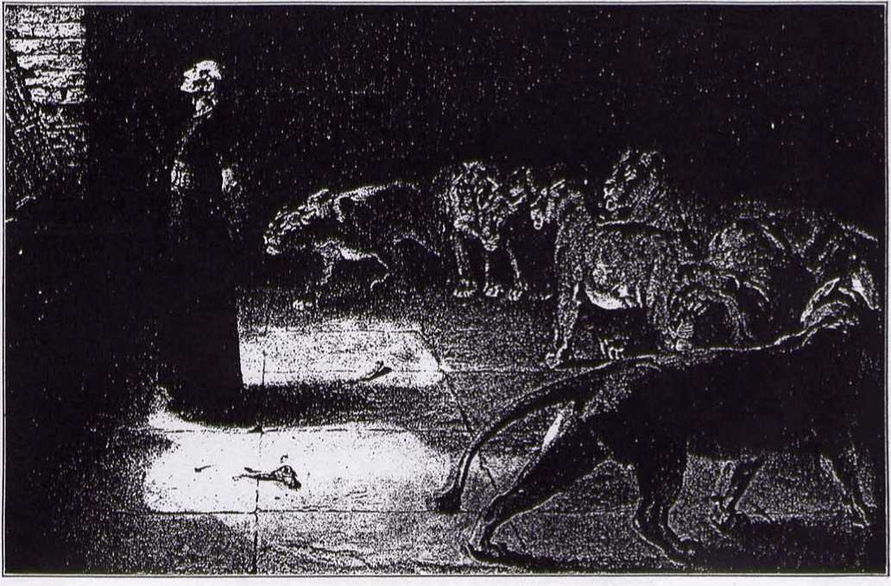
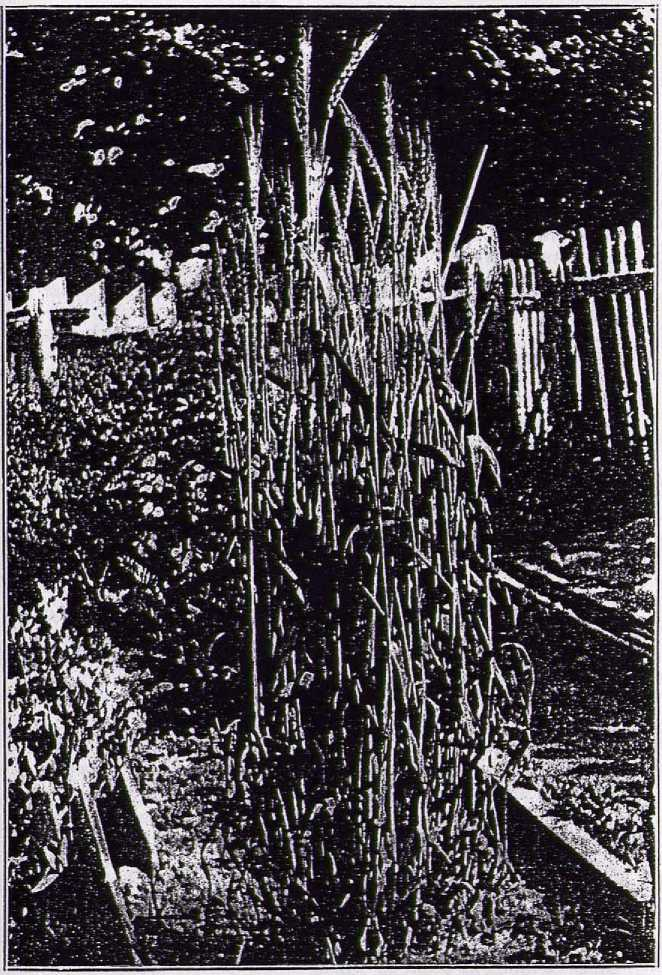
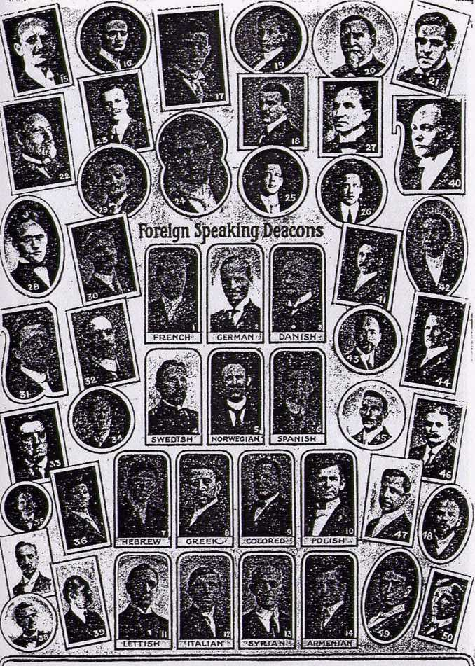
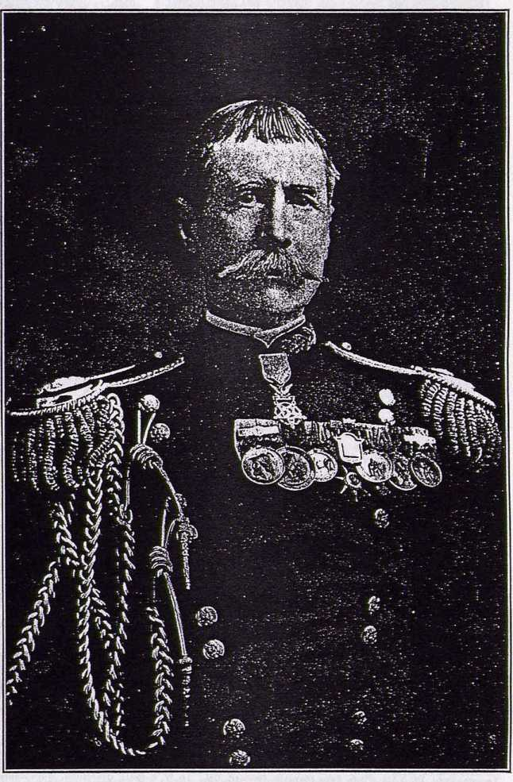

IN THE
ECCLESIASTICAL
H EAVENS
AS SEEN BY A
LAWYER
AN INTERNATIONAL CASE REVIEWED BY J. F. Rutherford, of the New York City Bar
liimiiiifiiiiiHiiiiiiiiiiinninniiiiiiiiinnniiiirnniiimnmilinnmniintninimnnmtinninHiinnnmimiiiiiiiniTiiiMiiiimniiiiiiiiiiiiimiiiifflmTnmitiwttKUtffitrnmn
IN THE MORNING DANIEL WAS FOUND UNINJURED.
A GREAT BATTLE
IN THE
ECCLESIASTICAL HEAVENS
AS SEEN BY A LAWYER
CATHOLICS, EPISCOPALIANS.
METHODISTS, LUTHERANS,
BAPTISTS. PRESBYTERIANS, ET AL
PLAINTIFFS
VERSUS
ONE MAN DEFENDANT
WHY THE GREAT CONTROVERSY? THE MOTIVE PROMPTING IT1 THE CHARGES MADE1 THE ANSWERS THERETO! WHAT WILL BE THE RESULT?
" Yet once more I shake not the earth only, but also heaven * * * that those things ’cohich cannot be shaken may remain."—Heb. 12:26,27.
COPYRIGHTED, 1913
BY J. F. RUTHERFORD
NEW YORK CITY
FOREWORD.
flERTAIN leading clergymen, represent-f . ing numerous church denominations, such as Episcopalian, Presbyterian, Baptist, Methodist, Christian, Lutheran, United Brethren, and certain Catholic bishops, priests and prelates, have united in their cause of action against ONE MAN. They are assailing him from every conceivable quarter, using all possible means, foul or fair, to destroy that ONE MAN’S influence and power. They seek to enlist every possible agency, willing or unwilling, to aid them in their unrighteous conflict. They have precipitated the biggest ecclesiastical disturbance ever known. The noise of their battle is heard to the uttermost parts of the earth and their dust is blinding many people. The Ecclesiastical Heavens are being shaken with great violence. Who will fall? Who will remain unshaken ?
As statements of Judges and attorneys have been quoted by these allied forces, and without warrant used as a pretext for their attack, and used also as a basis for peculiar newspaper stories, the writer of this booklet feels duty bound to review the case and publish the facts to the world.
IN THE
ECCLESIASTICAL HEAVENS
BELLIGERENTS FORESHADOWED
HIS is the day of big things 1 Big enterprises, big trusts, big alliances and big fights! A big battle always creates much noise and attracts some attention. This ecclesiastical disturbance is no exception!
In every great controversy there must be at least two parties. Usually one is wrong and the other right. Each will
claim to be right. Each one may be conscientious. Conscience, however, is not always a safe moral guide. It will depend on whether or not that conscience has been educated according to the Divine rule. It is sometimes difficult for even the unbiased to determine who has the right of the controversy. There is one Guide we can always safely follow.
THE SAFE GUIDE Jehovah governs the Universe by fixed laws or rules, which we call principles.
The man who acts in harmony therewith is governed by principle. The one who acts contrary thereto is controlled by passion. The parties to a great fight may be foreshadowed, and the right or wrong thereof be determined, by the application of these fixed principles.
Most men claim to be conscientious, and we credit them with so being, but their conscience is often guided by the wrong influence. To determine the right of the controversy we must ascertain the Divine rule and apply it. The majority are measurably controlled by other men; therefore, to that extent controlled by passion and not by principle. For this reason the man who occupies an honorable position among men holds a place of great responsibility.
CLERGYMEN WHO SOIL THEIR SACRED VESTURE
A Minister of the Gospel occupies a most honorable position. A good man in such a place is a power for good, but when a Clergyman uses the garb of his
sacred office to accomplish a selfish purpose, or to vent his spleen against one with whom he differs, he not only violates his obligation to God, but -degrades himself and dishonors the cause of Christianity.
There are but two Great Masters—God and Satan. Every person serves one or the other of these Masters. God puts in operation good principles always. His Law furnishes an absolutely perfect guide. Satan exercises an evil power always. He is the father of falsehood, misrepresentation and abuse. Do all clergymen serve the same Master? “Ye are servants' of him whom ye obey.’’ “If any man have not the Spirit of Christ he is none of His.” (See Appendix for further proof on this point.)
HOLY WRIT SAYS, Every Clergyman is presumed to be "SPEAK evil OF ' a Christian. Sometimes this is a vile no man” presumption. Plainly God's Word
" ..... says to Christians, “Speak evil of no
man.” “Who art thou that judgest another!” “Thou shalt not bear false witness.” “Vengeance is mine, I will repay, saith the Lord.”. Sad indeed it is to see professed Christians, contrary to these Divine rules, resorting to slander, misrepresentation and vilification of a Christian gentleman who is giving his life to teaching the people to follow Christ. Even if the charges made by them were true no justification could be found in the Scriptures for uttering them, but when the charges are made in utter disregard of the truth. and with the avowed purpose of doing injury we are constrained to ask, Are these the servants of God or the servants of Satan?
Every great man and every good cause has mortal enemies. Great truths are dearly bought. Great reformations have had to fight every inch of the way to triumph! For nearly a half century the defendant in this case has been a shining light in the world, battling for good, that the eyes of men might be opened to a realization of the goodness of God manifested in His Plan towards mankind. He has fearlessly held forth the light of Biblical Truth, and as it has shone with increased brilliancy his assailants have become more venomous.
LIGHT ATTRACTS BUGS—BIG BUGS, LITTLE BUGS, BLIND BUGS
There is a reason for every wilful act. There is a controlling motive back of this great fight. Jesus said, "Darkness hates the Light." Error abides in darkness. The brilliancy of a light attracts blind bugs—big bugs as well as lesser ones—which vainly try to destroy the light and usually succeed in destroying themselves. As the defendant herein has held forth the light of Divine Truth and led thousands of honest Christians away from error, away from the bondage of various man-made
systems and out of darkness and into the glorious light of God, his enemies have exhibited a greater degree of ferociousness toward him.
UNHOLY ALLIANCE
ENEMIES FOR CENTURIES NOW BECOME STRANGE BED-FELLOWS
It is a well-known fact that for centuries Catholics and Protestants have been deadly enemies, and the Ecclesiastical Heavens have long been in turmoil because of the mortal combat between them. In the controversy we are here examining, Catholics and Protestants have united in a campaign of persecution. Enemies for centuries now become bed-fellows —strange bed-fellows these! Doubtless many who are following their leaders, however, are blind, and verily believe they are doing God service, by assaulting the great light bearer.
The public press exercises a mighty power, either for gcod or for evil. It has been a marvelous factor in the education of the people; therefore a power for good. When, however, the press is used by selfish and designing men as an instrument for the destruction of the good name of a fellow-man it then becomes a power for evil. A few unscrupulous newspapers, headed by The Brooklyn Eagle, always willing to be used as instruments for the promulgation of sensational and scandalous matter, have joined the aforesaid alliance and taken up the cudgel against One Man, the defendant.
The vulgar and the scandal monger, eager to ply their vocation, have joined the ranks and are performing their part.
e... c „■ ri o*ue Back of this motley brigade, and con-
oC THE PHARISEES ^t^ting the real bfainS there°f- ™ acainst ONE MAN certain keen, intellectual, far-seeing AGAINST ONE MAN designing wh0| without au*
thority from the Lord, have taken the title of " Reverend," “Doctor of Divinity," “Cardinal" or “Priest." Long have these rested in ease and comfort, as the Prophet describes them (Isa. 56:10, 11), while their poor parishioners have fed upon husks until they are famished.—Amos 8:11, 12.
Long have these designing men kept their flocks in bondage by keeping them in the dark. Now God’s Day of Reckoning is at hand. Seeing their berths of comfort and popularity in danger, the walls of the Babylonish systems crumbling, while many of their former supporters are hastily withdrawing in obedience to God’s command (Rev. 18:4), these men, without regard to religious belief or sectarian affiliation, in sheer desperation have joined hands against ONE MAN, the defendant, and have summoned to their aid all whom they can induce, cajole or coerce, and are exerting all their power in trying to stem the tide of Truth rapidly rising against them, striving to
Object of Attack
save their positions of ease.' The ONE MAN has turned the light upon them, exposing them to the gaze of the people. "Darkness hates the Light." This Unholy Alliance is straining every nerve and sinew to destroy this ONE MAN, his influence and his work. It is the same old game of the .Pharisees. It is history repeating itself.
EVEN GOOD JOHN WESLEY'S WIFE JOINED HIS PERSECUTORS
The same class assaulted St. Paul and persecuted him to the death. Martin Luther and other great reformers were victims of a like element. The great and good John Wesley was another victim—his own wife joining his persecutors. The same Pharisaical class defamed the Lord Jesus when He was on earth. They called in question the legitimacy of His birth, applied all manner of vile epithets to Him, denounced Him as an enemy of the government, and finally caused His crucifixion. Having in mind that similar treatment would be meted out to His faithful servants, Jesus said, "The servant is not greater than his Lord; if they have persecuted Me they also will persecute you,"
This case will be of special interest to lawyers and others who have in mind the illegal trial of our Master. Verily, human nature has not changed, even in this twentieth century of enlightenment!
PAPAL ROME AND HER MONGREL PROGENY AGAINST ONE MAN
In the case here we see Greek Catholics, Roman Catholics, Anglicans, Gentiles and Jews, Presbyterians and Methodists, Baptists, Lutherans, Congregationalists, etc., etc., not only in Amer
ica, but in Canada, in Europe, and from the four corners of the earth, united for the avowed purpose of overthrowing this ONE MAN. '
The fight against Martin Luther seems a pigmy compared with this one. In Luther's case it was Papal Rome against one man. In this case it is Papal Rome and all her mongrel progeny against One Man. ■
Who is the ONE MAN, the defendant THE GREATEST ia this case? PASTOR RUSSELLt LIVING PREACHER He is the most talked of preacher in the world. He preaches to more people than, any living man. Even his enemies concede that much. The Editor Afield of The Continent a member of the unholy combine and one of its spokesmen, recently said of Pastor Russell:
“His writings are said to have greater newspaper circulation every week than those of any other living man; a greater, doubtless, than the combined circulation of the writings of all the priests and preachers in North America; greater even than the work of Arthur Brisbane, Norman Hapgood, George Horace Lorimer, Dr. Frank Crane, Frederick Haskins, and a dozen other of the best known editors and syndicate writers put together."
Herein lies one of the causes for the attack by the allied forces. Some history will here be recalled with interest.
PREACHERS' UNION AND HOW ORDINATION CARDS TO PREACH ARE ISSUED
For nearly three hundred years after Martin Luther’s day there was a gradual development of Protestant denominational churches. Trouble would start in one denomination; a division would result; some would withdraw, and the seceders would organize a new denomination. Each seceding class became known by some sectarian name, such as "Baptists," "Methodists," "Campbellites,’ "Congregationalists," "United Brethren,” "River Brethren," "Christ-adelphians," etc. Each sect, by its own authority, authorized certain persons to preach, and seemingly no one had any special objections to this until about 1840.
The Bible teaches that THE Church is one, the Body of Christ, whereas the Protestant Systems, each claiming to be "The Church," number nearly two hundred. Because of this apparent inconsistency, they feared that all their organizations would be brought into disrepute, and therefore there should be some alliance between all of them; hence, in 1846, the "Evangelical Alliance" was formed. While allied, each sect formed its own Ordination Boards, which boards exercised the power of ordaining or authorizing others to preach.
One of the rules resulting from this Alliance has been, and now is, that no one shall be allowed to preach unless he has received an ordination at the hands of one of these "Ordaining Boards" already existing. Anyone attempting to preach without being licensed or formally ordained by one of these “Ordaining Boards" is branded as a scab preacher.
This Alliance has become virtually a Preachers’ Union, and an edict has gone forth that if anyone desires to preach he must get a union card (ordination); otherwise he is irregular. Some of the independent thinkers have held aloof from this Alliance, claiming the right to worship God according to the dictates of their own conscience and to exercise the liberty of
free speech.
HELL-FIRE GONE, COLLECTIONS COME SLOWLY
The defendant herein, Pastor Russell, has refused to accept such man-made ordination, recognizing the Scriptural method provided by the Lord, and none other. He has refused to be forced into the Combine; hence the Combine seeks to force him to quit preaching.
One of their strong men engaged Pastor Russell in debate, hoping thereby to discredit his scholarship and teaching. This acted as a boomerang to the allied forces, because the debate exposed the fallacy of the doctrines long taught by these systems, causing many of their flocks to flee from them. One- honest member of the Alliance who heard that debate said to Pastor Russell, “I am glad to see you turn the hose on hell and put out the fire." Hell-fire gone, the collections come slowly.
PREACHERS’ ALLIANCE, IN DESPERATION, ASSAILS "SEATS FREE AND NO COLLECTIONS” ADVERTISED BY ONE MAN with their money.
Then Pastor Russell adopted a kind of trade-mark on all of his announcements—"Seats Free, No Collection”— and the Alliance concluded that this was a reflection on their constant begging for money, and therefore another cause for anger. For some time now the poor fellows have had great difficulty in inducing the people to part Their congregations have been reduced to a handful, while thousands flock to hear Pastor Ruscell. The people prefer to go and hear the ONE MAN where the "seats are free and no collections,” and where they can get some comforting food,
Unable to successfully combat the shafts of Bible Truths shot forth by this great modern religious reformer, his enemies have resorted to the old device of throwing sand in the people’s eyes by attacking his private life and business methods.
If a bad man reforms and becomes a preacher for one of these systems his past deeds are forgotten and he is heralded as a hero in their cause, no matter what he believes, nor the character of the language used to express his belief.
But. when a good man, such as the defendant herein, who has a clean private life, boldly proclaims "the faith once delivered to the saints" and exposes the errors of the Dark Ages which have long held the people in bondage, all conceivable charges are trumped up by his enemies, and these magnified, for the manifest purpose of preventing the people from seeing the Truths he is teaching.
SOME NOTABLE EXCEPTIONS IN PREACHERS’ UNHOLY ALLIANCE
Do not understand me to say that all the preachers are in this Unholy Alliance. There are exceptions. Thus is the rule proven. There are some good Christian gentlemen in the ministry who are, no doubt, doing the best they know to serve the Lord, but these are taking no part in this unholy warfare.
The active members of the Unholy Alliance, however, have grown desperate. Their operations are not confined to a single community. They have carried the fight into every State in the Union; every province of Canada; throughout Great Britain; the European Continent; China; Japan; India; Australia and the Islands of the Sea.
Members of this Preachers’ Union or Alliance caused thousands of extra copies of th’eir favorite medium of slander and libel—The Brooklyn Daily Eagle—to be printed and sent all over the world. As soon as announcement is made that Pastor Russell is to be in a certain city to speak, this reprint of the Brooklyn Eagle puts in its appearance and is freely distributed.
Some people are deceived into believing that the Brooklyn Eagle is one of the greatest papers printed; whereas, although published in the great city of New York, its regular circulation
is only about 25,000.
POPULARITY OF THIS MAN PROVOKES PREACHERS’ UNION
It is a well-known fact that Pastor Russell's sermons are published each week in hundreds of newspapers in different parts of the world. This provokes the members of the Alliance, and in nearly
every country of the world they have held meetings and passed resolutions denunciatory of Pastor Russell and his work; and they try to coerce the newspapers, by threats of boycotting and other means, to cease printing his sermons.
As an illustration, we cite the four-column editorial in the Evening Journal, of Wilmington, Delaware, December 4th, 1914, setting forth how the Ministerial Union tried to force that paper to cease the publication of Pastor Russell’s sermons. There are many similar occurrences throughout the country.
OVER 9,000,000 SEE HIS CREATION DRAMA FREE
Pastor Russell, the defendant herein, is the author of the Photo-Drama of Creation, It is a wonderful production. The Bible story, beginning with creation, is set forth in an orderly manner to modern times.
This beautiful story is told to the people, assembled in public halls, by means of a phonograph, or talking machine, and illustrated by many artistically colored stereopticon views and motion pictures. It has attracted wide attention throughout the world, and I am authoritatively informed, by the manager of the Photo-Drama, that nine million persons have seen this great exhibition, in America alone, and that, too, “Seats Free and No Collection
The Photo-Drama of Creation is the greatest educational philanthropy that has been given to the world. The money to finance it was contributed by many persons who are anxious to teach the present generation the wonders
12
Religious Intolerance
of the Bible. Had the preachers done their full duty, it might not have been necessary to have the Photo-Drama, but "God moves in a mysterious way His wonders to perform,” and so HE is using many untitled and humble-minded persons to spread the Message of glad' tidings concerning Christ and His Kingdom of blessings, and pointing the people to the near end of Babylonish reign.
If our forefathers, who laid the foundation of the American Government as a land of religious freedom, could see the religious intolerance manifested by this combine of ministers, they would turn over in their graves. The methods adopted in their frantic endeavor to crush Pastor Russell and his philanthropic work are shocking to every fair-minded, liberty-loving person.
SAMPLE METHOD OF PREACHERS' UNION
Laurel, Mississippi, is the scene of action. Mr. Nicholson, Manager in Charge of the “Drama," rented the Opera House at this place from Mr.
Taylor, the owner, in which to exhibit the Photo-Drama. The two gentlemen were standing in front of the Opera House preparing for the advertisement. Mr. Taylor was delighted with the opportunity of having such a wonderful exhibition given in his house, and was congratulating himself, when along came the leading Methodist minister of the place, who is designated “The Boss of the Preachers' Union” there.
Learning what was about to take place he became enraged, shook his fist in Mr. Nicholson's face, exclaiming in angry tones, " You try to show these things in this town and you will have the biggest fight on your hands you ever saw; better get out of town, and get quick!” Mr. Nicholson proceeded, undaunted by this threat, to prepare for the exhibition. The Ministerial Union at once held a meeting, in which all engaged in denouncing Pastor Russell and the “Drama," except the Episcopalian minister, who stood firm for religious tolerance and common decency. The union passed resolutions against the “ Drama ” and Pastor Russell; then called upon the Mayor of the City and Chief of Police and induced them to notify the “ Drama” Manager that it should not be exhibited in that city.
The Ministerial Union then used its power with the Electric Light Company, and induced its owners to cut off the electric current and refuse to furnish such to be used by the "Drama.” Their influence was brought to bear upon Mr. Taylor, the Opera House owner, to such an extent that he tore down the advertisements which, by his own direction, had been placed upon the billboards. The Photo-Drama Manager then went to Judge Beavours, the leading attorney of the city, and appealed to him for assistance. He is a "Lawyer of
A MODERN the Old School,” who is willing to fight
Gamaliel for the right. He at once informed the
Electric Light Company and the city officials that he would apply to the courts for an injunction against them, and have them restrained from unlawfully exercising their power.
This frightened the city officials and the Electric Light Company, and the preachers weakened. They decided to not further attempt to prevent the exhibition of the Photo-Drama. The Mayor sent word to the Manager, saying, "Go ahead, only don’t knock us or the preachers." They feared the result when the people should see the pictures and know they had been so woefully misrepresented. The people came and were delighted, some saying, "We cannot understand the ministers’ opposi tion!"
And thus this Unholy Alliance continues its fight against the ONE MAN, who, like a mighty ship in a storm, majestically rides the waves, keeping steadily on his course to the goal. While the storm of persecution rages, the common people crowd the halls where he goes, eager to hear, in this hour of peril, the message of comfort that he brings to their hearts. The scope of his work and his influence continue to grow, and members of the Preachers’ Union gnaw their tongues, rage and imagine vain things.
The defendant, Pastor Russell, is my friend. I have known
him for fifteen years or more, and for several years have represented him as his legal counselor. I have carefully investigated every specific charge that has been made against him. Being famil-
CHARGES SPECIFICALLY EXAMINED AND COMPLETELY REFUTED . . , . . - ... . -.
iar with the facts, especially relating to the charges against him that have been adjudicated in the courts, I deem it my duty to the public that I publish these facts.
Pastor Russell needs no defense amongst those who know him. These lines are more especially to advise the public.
Sneeringly, his opponents refer to him as a ‘‘haberdasher” and “seller of shirts." It is true that when Pastor Russell was a young man, and before reaching his majority, he was. engaged in the mercantile business, selling Gents’ Furnishing Goods, and his business ability was demonstrated by the fact that he soon was operating five different stores.
If it is a disgrace in the eyes of the Preachers' Union for a man to labor with his hands, then surely they are welcome to all they can get out of it. Pastor Russell was in good company. .We are reminded that St. Paul was a practising lawyer for a time, and a successful one, too, and that he also made tents to provide his temporary necessities. Jesus was a carpenter. Blessed is he that labors.
His enemies charge that he has organized various corporations through which he conducts his religious work, and that
PASTOR RUSSELL INCORPORATES BIBLE SOCIETY
are the facts?
he uses these as a means of personal and financial gain to himself, and that the corporations are merely blinds by which he deceives the people. What
In 1884 the Watch Tower Bible and Tract Society was organized, and was incorporated under the laws of the State of Pennsylvania, for the purpose of the mental, moral and religious improvement of men and women, by teaching the Bible by means of the publication and distribution of Bibles, books, papers, pamphlets and other Bible literature, and by providing oral lectures free for the people.
NO VOTE EVER CAST AGAINST PASTOR RUSSELL
This is a non-stock corporation; it pays no dividends, no salaries, and no one has ever, as its books clearly show, reaped any financial benefit therefrom.
It is supported entirely by voluntary contributions made by those who are interested in the promulgation of Bible Truths. Its work is exclusively religious. For each contribution of $10.00 the contributor is entitled to one voting share. While there are nearly two hundred thousand shares, and it would be an easy matter to elect some other man as
president, there never has been cast a vole against Pastor Russell.
At the last election he was absent, his own votes were not cast, yet more than one hundred thousand votes of others were cast for him as president. The contributors and voters are men of strong character and many of them of superior financial standing, scattered throughout America and Canada. Such loyal supporters as these testify to the high esteem in which the president of this institution is held. Like other corporations, its business affairs are controlled by a Board of Directors.
In 1909, the work of this non-sectarian religious corporation having largely increased, and Greater New York City being ANOTHER most accessible place from which
CORPORATION t° direct its work, both in America and
NECESSARY foreign lands, it was deemed, by its
" “ ’' ’ ' Board of Directors, wise to move the
headquarters to Brooklyn.
I was consulted about the matter and advised that under the laws of the State of New York the Watch Tower Bible and Tract Society could not have the same privileges as it enjoyed under the special statute of Pennsylvania, under which it was organized, and suggested the advisability of the organization of a similar corporation in New York State.
This suggestion was followed, and the Peoples Pulpit Association was organized under the Membership Corporation Law of New York for the identical purposes for which the Watch Tower Bible and Tract Society exists. The Peoples Pulpit Association holds title to the property in New York wherein the work of said Society is conducted.
Later it became necessary to have a European corporation in the interests of the work, a large portion of its activities being in European countries; hence a corporation was formed
GREAT BRITAIN CORPORATION I. B. S. A.
under the laws of Great Britain with headquarters at London, under the name of the International Bible
Students Association. It was organized for the identical purposes for which the parent corporation, the Watch Tower Bible and Tract Society, was originally organized, and all three of these corporations are practically one and the same. All contributions are made to the Watch Tower Bible and Tract Society, which finances all the work of the three corporations named.
Throughout the various countries of the world are classes of Bible Students who, independent of all sectarian creeds or systems, regularly assemble at their homes or public halls, for the purpose of Bible study, and these are known as “Associated Bible Students,” because their work and study are in harmony with that conducted by the aforesaid corporations. None of these are corporations for profit; they pay no dividends, no salaries, and no one has ever reaped any financial benefit therefrom, but all funds thereof are used for the promulgation of Bible Truths.
Much ado has been made by his enemies about business
UNITED STATES INVESTMENT COMPANY
corporations with which Pastor Russell is connected, particularly with reference to the United States Investment Company.
The fact is that this company was never a corporation in the strict sense of the word. It was a limited partnership organized under the Statutes of Pennsylvania. Its capital stock was SI,000. Pastor Russell furnished that $1,000 out of his personal means.
This company was organized for the purpose of taking title to certain property which it did take over and afterwards disposed of, and every dollar that was received therefrom went into the treasury of the Watch Tower Bible and Tract Society, and was used for its religious work.
Pastor Russell did not receive one cent profit therefrom, nor has any other person ever reaped any pecuniary profit therefrom.
16
Capital—Income
This company has been out of existence for more than two years, and does not own anything today, even its'capital stock being expended by the Watch Tower Bible and Tract Society in its religious work.
There is no corporation in existence anywhere in the world in which Pastor Russell owns a single share of stock, nor in which anyone else holds any stock for his use or benefit.
PASTOR RUSSELL’S When Pastor Russell closed out his WEALTH business, many years ago, he had
upwards of a quarter of a million dollars. The greater portion he freely spent in the publication of Bible literature, which was distributed to the people without charge for the purpose of enlightening them concerning the harmonious Plan of God as taught in the Scriptures. The- remainder of his wealth he transferred to the Watch Tower Bible and Tract Society in harmony with and in fulfilment of an agreement between himself and wife made before their domestic troubles began.
Pastor Russell now has no money, no bank account and owns no property aside from a few personal effects, nor does anyone hold any property or money for his personal benefit.
His life for the past forty years has been devoted exclusively to religious work, during which time he has received as a monetary compensation his meals and a modest room in which to work and sleep, traveling expenses and $11 per month for incidental expenses, which amount is supplied by the Watch Tower Bible and Tract Society.
The charge that he has used these corporations for his personal and private gain is absolutely false, as the books of the corporations abundantly testify. Every dollar that comes into his hands he accounts to the Society for the same.
As an illustration, it was incidentally shown in a lawsuit in which the books of the Society were necessary as evidence that on one occasion Pastor Russell was on the opposite side of the continent from New York when he was handed a draft for $10,000, payable to his own order and which he could have cashed and appropriated to his own use, but, on the contrary, he sent the draft at once to the Treasurer of the Society, authorizing him to indorse his name thereon and cash it for the benefit of the work of said Society, which was done.
On the occasion of the above lawsuit a committee of five gentlemen, experts, were appointed to audit the books of the corporation, and not one penny was found as having been misappropriated by Pastor Russell or anyone else.
I know these facts because it was necessary for me, as counsel, to go over the audit.
Pastor Russell was married in 1879. .For the first thirteen years of their married life he and Mrs. Russell lived happily together. They were both engaged in religious work, and had been even before their marriage. A semi-monthly religious journal, The Watch Tower, was published, of which Pastor Russell was and still is the editor. She became dissatisfied with his manner of conducting this journal and attempted to dictate the policy thereof. Being the head of the house, Pastor Russell would not submit to his wife's dictating the manner of conducting his business affairs. Without notice, DOMESTIC she voluntarily separated herself from
troubles him in 1897, nearly eighteen years after
...... '' their marriage. For' nearly seven years she lived separate and apart from him, he furnishing her a separate home.
In June, 1903, she filed in the Court of Common Pleas at Pittsburgh a suit for legal separation. They had been actually separated for nearly seven years. In April, 1906, the cause came on for trial before Justice Collier and a jury.
It has been remarked by a number of lawyers who have read the record in this case that "no court has ever before granted a separation upon so slight testimony as appears in this case.” The record discloses nothing except a misunderstanding between husband and wife, and which at one time was adjusted, by mutual consent. The issue being submitted to the jury they evidently concluded that, being already actually Separated for a period of seven years, a legal separation might as well take place.
There never has been an absolute divorce of either of the parties.
GREATEST FISH STORY EVER MANUFACTURED here and there. I
Upon the trial of this cause Mrs. Russell testified that one Miss Ball had stated to her that her husband said, “I. am like a jelly-fish, I float around touch this one and that one, and if she responds I take her to me, and if not I float on to others."
All this matter the Court struck from the record and would not permit it to go to the jury. In his charge to the jury the Judge said: “This little incident about this girl that was in the family, that is beyond the ground of the libel and has nothing to do with the case because not being put in it, and it was condoned or allowed to pass.”
It is manifest that this “jelly-fish" story was entirely the product of Mrs. Russell's imagination, and other facts which appear in the record conclusively show that it could not have been true.
Pastor Russell emphatically denied that any such thing ever occurred. It would seem unreasonable that any man would make such a statement about himself.
But the most conclusive facts disclosed by the record showing her statement to be untrue are these: Miss Ball came to them in 1889, a child of ten, and was taken into the home of Mr. and Mrs: Russell. She was treated as a member of the family. She was an orphan. She kissed both Mr. and Mrs. Russell good night each evening when she retired. They treated her as their own child. (Court Record, pages 90, 91.) _ Mrs. Russell testified that the “jelly-fish" incident transpired in 1894, when the girl could not have been more than fifteen years of age. ' (Page 15, Record.)
Mrs. Russell lived with her husband for three years thereafter and was separated from him seven years longer before suit was filed, or ten years after the alleged incident before she filed her suit for separation. In her complaint, or bill for separation, no reference whatever is made to the Ball or jelly-fish incident. Her husband had no notice that she intended to make such a charge, and when upon the trial it was intimated by her counsel that he expected to prove such, counsel for Pastor Russell asked for a continuance of the case, which the Court denied. Miss Ball was then living and Mrs. Russell knew where she was and could have procured her as a witness, or have had her deposition, in court. No attempt was made to procure her attendance or her deposition.
Pastor Russell could not have had her there to testify because he had no notice or intimation that his wife would attempt to bring such into the case. It is but reasonable to conclude that this jelly-fish story was manufactured for the occasion. Truly it is a great fish-story!
a ri inohpr Another point that conclusively shows
ULINUMtH that the “jelly-fish story,” or Miss Ball incident, was manufactured and untrue is this fact: Three years after the alleged incident Mrs, Russell herself selected and called together a committee of three before whom she and her husband met to discuss their differences and tried to arrange them.
Two members of that committee testified at the trial that all the differences of Mr. and Mrs. Russell were discussed and that their trouble grew out of the management of the paper, or journal. The committee decided against Mrs. Russell’s contention, and, in their language, the two “ kissed and made up.”
The Miss Ball or jelly-fish incident was not even intimated, to this committee. (Court Record, pages 79, 113-116.)
MRS. RUSSELL TESTIFIES HER HUSBAND WAS NOT GUILTY
At the trial of this case Mrs. Russell's counsel made mention that Mr. Russell was in a room with Emily Matthews, a member of the household, and the door was locked; To this Pastor Russell at
the time made answer under oath (page 92, Record of Testimony) , as follows:
“I said (to Mrs. Russell), ‘Dear,you understood all about that. You know that was the room in which the slops were emptied and the water was carried, and that was the morning that Emily Matthews was sick, and you told me of it and asked me to go up and see her, and when they were running out and in with water pails I turned the key for half a minute until I would have a chance to hear quietly what she had to say, and there wasn’t the slightest impropriety in anything that was done. I would just as soon that everybody in this room would be present.’”
Mrs. Russell did not deny this statement in her testimony, and therefore, being undisputed, it must be taken as the true and correct explanation. It shows not the slightest impropriety on his part.
That Mrs. Russell herself did not believe and never has believed that her husband was guilty of immoral conduct is shown by the record in this case where her own counsel (on page 10) asked Mrs. Russell this question: “ You don't mean that your husband was guilty of adultery?” Ans. “No. ”
It is seen that the court properly took away from the jury the consideration of the “jelly-fish” incident to which she testified. These are the facts which Pastor Russell's enemies distort, and upon which they charge him with immoral conduct.
There was no testimony produced upon the trial of this case that had any tendency to show that Pastor Russell had been morally derelict in the slightest. No witness testified against his moral character, and no witness in any court has ever yet uttered a word of testimony tending to show anything against his morality.
PASTOR RUSSELL EXONERATED IN SEVERAL COURTS
Shortly after the trial of the above case the Washington Post published the aforementioned ‘jelly-fish" story in connection with the name of Pastor
Russell, and charged that he was guilty of immoral conduct. Thereupon Pastor Russell filed suit for libel against the Post, which case was tried before a jury. The instructions of the court on behalf of the defendant, the Post, were manifestly erroneous and prejudicial, but notwithstanding this the jury brought in a verdict exonerating Pastor Russell, but allowed him only one dollar damages.
Pastor Russell thereupon appealed to the Superior Court, which court reversed the judgment of the lower court and remanded the case for retrial, that a jury might have opportunity to assess larger damages. The case came on for trial the second time and after plaintiff had put in a portion of his testimony counsel for the Washington Post offered a compromise and the case was settled by the defendant, the Washington Post, paying to Pastor Russell a substantial sum of money, together with all costs in the case, and the Post thereafter published his sermons.
Thus he. was completely exonerated by two different courts concerning the ‘‘jelly-fish” or immoral story.
Still his enemies persisted in trying to get this before the public. A preacher in New Jersey wrote an article to a Chicago paper, the Mission Friend, charging Pastor Russell with immorality, and as proof thereof cited the Miss Ball or ‘‘jellyfish" story. Thereupon an action of libel for damages was filed by Pastor Russell’s counsel against the Mission Friend. The case came on for hearing, and after argument of the legal questions involved the Court decided in favor of Pastor Russell. The only question that remained to determine was the amount of damages to be allowed Pastor Russell.
Counsel for the Mission Friend then sought a compromise or settlement. Pastor Russell not desiring “blood money,” but merely that his good name might be vindicated, agreed to the compromise upon the following terms, which were carried out, to wit:
The Mission Friend paid all the costs and published a retraction admitting that it had wrongfully published the Miss Ball or “jelly-fish" story concerning Pastor Russell, further stating that Pastor Russell is a Christian and a gentleman of the highest integrity and moral standing and entitled to the respect and esteem of all good people.
MIRACLE WHEAT NOT NAMED BY PASTOR RUSSELL, NOR DID HE EVER REALIZE ANY MONEY FROM IT
Pastor Russell’s enemies charge that he sold a great quantity of ordinary seed wheat under the name of "Miracle Wheat,” at one dollar per pound, or sixty dollars per bushel, and realized therefrom an enormous sum of money which he appropriated to his own use.
This is not only an exaggeration, but a glaring falsehood.
In the year 1911 J. A. Bohnet, of Pittsburgh, Pennsylvania, and Samuel J. Fleming, of Wabash, Indiana, each having a quantity of Miracle Wheat, together presented to the Watch Tower Bible and Tract Society the aggregate of about 30 bushels with the proposition on their part that the wheat
should be sold at $1.00 per ppund and all the proceeds arising from the sale thereof should be received by the Watch Tower Bible ano Tract Society as a donation from them, to be used by said Society in its religious work. The wheat was received and sent out by the Society, and the gross receipts therefrom were about $1,800, •
Pastor Russell did not get a penny, of this. His connection therewith was this, that he published a statement in his journal, The Watch Tower, giving notice that this wheat had been contributed and could be had for a dollar a pound.
Pastor Russell did not discover the wheal, nor did he name it, nor did he receive any personal benefit therefrom. Nor was the Society of which he is president guilty of the slightest misconduct.
Had this same transaction occurred with some Catholic or Protestant church no one would ever have thought of making any fuss about it. But the Preachers’ Union seized upon it as another means of persecuting Pastor Russell.
PREACHERS' ALLIANCE EMPLOYS BROOKLYN EAGLE FOR SYSTEMATIC ATTACK UPON PASTOR RUSSELL
It is a well-known fact that the Brooklyn Daily Eagle is given to making unwarranted attacks upon others. Its persecution of the late lamented Dr. T. DeWitt Talmage is an instance. It may seem the part of wisdom to divert attention by charging another with
wrongdoing. The Eagle has not such a reputation as a good man would desire. 1
Pastor Russell’s teaching was not interfering with The Eagle, but was enlightening the people and thus interfering with the Preachers’ Unholy Alliance, and some of its members deemed it necessary to do something. The Eagle was employed as an instrument to do the job. The Eagle was willing and ready to begin the attack. Hence, on March 22,1911, The Eagle published an article ridiculing the religious work in which Pastor Russell was engaged (fol. 936). On the same day it published another article ridiculing “Miracle Wheat" and various persons engaged in growing it. On September 23, 1911, it published an article announcing that the United States Government was about to take up the matter of Miracle Wheat, intimating that the Government Inspector would ask to be furnished with a sample of Miracle Wheat sold at Pastor Russell’s Tabernacle, to be tested, “that the faithful and a waiting world may learn more fully of the astonishing merits of this precious grain" (fol. 981).
As a matter of fact, the Government had been experimenting with Miracle Wheat for more than three years at that time. which shows that The Eagle was trying to mislead its readers and prejudice them against Pastor Russell by inferentially charging that he was selling a fraudulent wheat.
On the same date The Eagle published a libelous cartoon, and words in connection therewith, directed against Pastor Russell and his alleged relationship to Miracle Wheat. Pastor Russell sued The Eagle for damages. The facts given here are taken from the record of the trial of that case in the Supreme Court of Kings County, New York. Figures appearing in parentheses, thus (fol. 774, etc.), refer to folios of the printed record of the case now on file in the Appellate Division of the Supreme Court of New York.
The chief issue raised by the pleadings in this case was whether or not the wheat in question was superior to ordinary wheat. Eleven witnesses testified to its superior quality over other wheat.
Following are the names and addresses of the witnesses: Kent B. Stoner, Fincastle, Virginia; Joseph I. Knight, Sr., 1067 38th Street, Brooklyn, New York; Isaac L, Frey, Lower Mt. Bethel, Pennsylvania; Frederick Widener, Belvidere, N. J.; Henry D. Ayre, Cleveland, Tennessee; William Pray, Mansfield, N. J.; William I. Tomlinson, Kirkwood, N. J.; Edward W. Hunt, Stratford, N. J.; Dr. Joseph A. Carlton, Palmetto, Georgia; J. A. Bohnet, Pittsburgh, Pennsylvania; Samuel J. Fleming, Wabash, Indiana.
The eight first named never heard of Pastor Russell or his religious teachings prior to the trial of this case, but had been experimenting with Miracle Wheat and found it far superior
to any other wheat.
ORIGINAL PLANT OF MIRACLE WHEAT HAD 142 STALKS
The testimony showed that in the year 1904 Mr.. K. B. Stoner noticed growing in his garden in Fincastle, Virginia, an unusual plant, which at first he mistook for a kind of grass known as parlor
grass, but which, upon further observation, proved to be wheat. The plant had one hundred and forty-two stalks, each stalk bearing a head of fully matured wheat.
Mr. Stoner had never prior to that time seen a wheat plant bearing more than five heads.
The unusual yield from this single plant prompted him to save the grain, which he planted the following Fall (fols. 73-75). For several seasons he continued producing this grain, and in 1906, about two years after discovering it, because of its remarkable producing qualities, he named it Miracle Wheat (fol. 81).
In 1908 or 1909 Mr. Stoner called the attention of the witness, J. I. Knight, to the unusual qualities of the wheat
The above is a photograph of One Stool of Miracle Wheat grown in 1912 in the garden of Mr. K. B. Stoner, Fincastle.Va., within two feet of the identical .spot where the original stalk of Miracle Wheat was discovered. It Is grown from one grain and was six feet tall at the time this photograph was taken and was not then fully grown.
and it was arranged that they should grow the wheat on shares and. market it after accumulating a sufficient supply (fols. 86,127, 129). Mr. Knight received a forty-five per cent. (45%) interest in the wheat. 'They agreed to withhold the wheat from the market until 1912 (fol. 128), but subsequently decided to sell in August, 1911 (fols. 128, 125).
M1RACLE WHEAT SOLD BY OTHERS AT $1.25 PER POUND
After making his arrangement with Mr. Stoner Mr. Knight went to Europe and exhibited the wheat in the agricultural departments of va-
rious countries (fols. 129-131). Neither
Mr. Knight nor Mr. Stoner had ever corresponded with Pastor Russell, nor had any acquaintance with him or with any of his associates prior to the time of the trial (fols. 82, 154).
Prior to his meeting Mr. Knight, Mr. Stoner had sold some of the wheat, always at $1.25 a pound (fols. 80, 83). . In 1908 he sold four pounds at $1.25 a pound to Joseph A. Carlton, a dentist of Palmetto, Georgia, the owner of a 256-acre farm (fol. 162). tn 1909 he sold two pounds to Frederick S. Widener, of Belvidere, bj- J-, for from somewhere between two and five dollars (fol. 396). Mr. Widener gave some of this, to Isaac L. Frey, a farmer of Lower Mt. Bethel. Neither he nor Mr. Frey had any connection with Pastor Russell’s work (fols. 395, 387, 383). .. .
William I. Tomlinson and Edward Hunt, farmers of New
Jersey, also experimented with this wheat.
All of these persons who thus bought their wheat directly or indirectly from -Stoner, the discoverer of the wheat, or from Knight, his partner, found it . to have remarkable, reproducing qualities (fols. .385-392, 396, 470, 1, 478-480).
OVER 80 BUSHELS OF MIRACLE WHEAT TO THE ACRE
The first plant found by Stoner had oyer 4,000 grains to the stool. In the Fall of 1904 he planted 1,800 grains, and each grain yielded an average of 250 grains-. The average return from ordinary wheat in.this section was about ten grains for each grain of seed (fols. 75-78). Mr. Stoner found that a peck to the acre, that is 15 pounds of Miracle Wheat, produced over forty bushels (fol.. 88). He has raised as high as 80 bushels of Miracle Wheat to the. acre (fol. 92).
Thus it is seen that Miracle' Wheat produced twenty-five times as much as ordinary wheat in proportion to the amount sown. Mr. Stoner had experimented with Red Wonder, Fuldz and Old Mediterranean wheats. The productiveness of Miracle Wheat was found to be due to its large stooling qualities (fol. 95). For these stooling qualities it needs more room than the average wheat, requiring 16 inches between the rows, and about four times the space of ordinary wheat. If sown like ordinary wheat Miracle was a failure, for room was essential (fols. 97-99, 104). A four by four-inch space, such as the Government allows, is too small to allow for the normal stooling of Miracle Wheat (fol. 104). When' he has observed common wheat planted in competition with Miracle, the spaces between Miracle planting have been about four times the space between the other wheat plantings. This was as he recommended (fol. 155).
Widener, when he sowed Miracle, counted 22 to 28 stalks to the grain (fols. 396, 397). Mr. Frey raised a bushel and a half of wheat from a quart of grain (fol. 383), and the following year, 1911, raised 108 bushels from 16 to 22 quarts of seed. He seeded about 15 pounds to the acre (fols. 383-392).
Mr. Henry A. Ayre, a farmer of Cleveland, Tennessee, with thirty-five years’ experience, bought some Stoner (Miracle) Wheat in the fall of 1909 or 1910. He sowed one-half bushel to a
MIRACLE WHEAT TAKES FIRST PRIZE AT SEVERAL STATE FAIRS
scant seven-eighths of an acre and reaped a little over twenty-six bushels per acre. His is a poor wheat section, where the yield of ordinary wheat is about 8 bushels per acre.
Mr. Ayre found Miracle Wheat hardier than ordinary wheat, standing the winters better and stooling much more than any other wheat he ever saw. It stood a freezing winter where rye had frozen out (fols. 299-402). He had the surrounding farmers raise this wheat for him under contract (fol. 407). He raised as large as 64 stools from one plant of this wheat. .
Miracle Wheat took first prize for him in the Fall of 1910 at the Appalachian Exposition, for Tennessee, Georgia and North Carolina, and also took first prize at the State Fair in Tennessee, and at his county fair (fol. 406). He grew Exhibit 6, a stool of Miracle Wheat containing 49 stalks (fols. 408, 943).
MIRACLE WHEAT STOOLS BETTER THAN OTHER WHEAT
stalks grown from
William Pray, a farmer of Mansfield Township, N.J*, who was unacquainted with plaintiff in any way, raised Stoner or Miracle Wheat for three years. He grew Exhibit 30, containing over 80 a single grain. He had been a farmer for twenty-five years. An acre of ordinary wheat which he sowed with two bushels yielded 17 bushels, whereas an adjoining acre which he. sowed with a half bushel of Miracle Wheat yielded 25 bushels. He never saw any wheat stool as Miracle
Miracle Wheat produced by Edward Mc-Cleery, 2491 Wabash Ave., Loa Aneelea, Cai. Offered aj exhibit in Barle libel case (fol. JS8>.
Wheat did. To this is due its superior producing qualities (fols. 464-466). The usual practice of farmers in his section is to sow two bushels of ordinary wheat to the acre, and he knows of no way of getting better results (fols. 467, 468).
William I. Tomlinson, who had been a farmer for nine, years, in Kirkwood, N. J.,in 1909plant-ed Miracle Wheat in competition with ordinary wheat—16 acres with Miracle Wheat at a half bushel to the acre, which yielded 32 bushels to the acre, and 20 acres of ordinary wheat at'one and a half bushels to the acre, which yielded 21 bushels to the acre. He is not a follower of Pastor Russell, nor a believer in any of his doctrines (fols. 470, 471).
Edward W.' Hunt, a farmer of Stratford, N. J., for many years, who does not know Pastor Russell and was not connected with him in any way, experimented with Miracle Wheat. He first sowed a bushel of seed to an acre and a half, which produced 56 bushels, part of the crop having been destroyed. In IBlland1912 he planted Mira'cle in competition with Amber Wheat. He planted 10 acres with Miracle, three pecks to the acre, and the yield averaged 34X bushels per acre, or 345 bushels in all. He planted 18 acres with Amber Wheat, a bushel and a half to the acre, and the yield was 325 bushels in all, or a little more than 18 bushels to the acre. Both fields were alike, stood side by side, and the conditions were the same.
The original plant of Miracle Wheat, discovered and named by Mr. Stoner, contained 142 heads of well-matured seed,
grown from one grain (fol. 74). A bunch of wheat grown near Los Angeles, California, of the same Miracle Wheat was exhibited before the jury and put in evidence (fol. 158). It contained 118 stalks and as many heads of well-developed wheat standing more than six feet tall, all grown from one grain. (See illustration.) .
PASTOR RUSSELL’S FIRST KNOWLEDGE OF MIRACLE WHEAT
On November 23, 1907, H. A. Miller, Assistant Agriculturist of the United States Government, filed in the Department of Agriculture at Washington, D. C, a report upon the wheat being .grown upon Mr. Stoner's farm, highly commending said wheat (fols. 1185-1188). The public press throughout the country at the time took notice of this report. Pastor
Russell's attention was called to it, and on March 15, 1908, he published in his journal, The Watch Tower, some press comments and extracts from the aforementioned Government report. This was Pastor Russell’s first knowledge of Miracle Wheat, which wheat Mr. Stoner and others had been experimenting with for three years or more.
Dr. Joseph A. Carlton, of Palmetto, Georgia, reading in Pastor Russell’s PKa/cZt Tower the aforementioned notice, purchased from Mr. Stoner four pounds of this wheat for which he paid Stoner $1.25 per pound, or $75 per bushel (fol. 169). He planted a pound and three-quarters to one-fifth of an acre, took accurate account of the yield, and found that it was eight bushels and 24 pounds, or 504 pounds. Georgia is not a wheat State (fols. 162,163). Yield of ordinary wheat in that State is from 5 to 20 bushels to the acre (fol. 164). In 1910 Dr. Carlton reaped 62% bushels of Miracle Wheat from a little over two acres (fol. 165). From one single grain in his field 71 stalks were grown (fol. 168).
Mr. Bohnet got a peck of this wheat from Dr. Carlton. He sowed 14 pounds to one-half an acre and reaped 8 bushels. One-half of this he sent to Mr. Kuesthardt, of Port Clinton, Ohio, editor of the Ottawa Zeitung, a German county newspaper. Samuel J. Fleming, of Wabash, Indiana, got five ppunds of seed from Bohnet and 20 pounds from Kuesthardt, and sowed 25 pounds to about one acre of land, and although it was late in the season his yield was 34 bushels. Average yield of ordinary wheat in that section (sowed a bushel and a half to the acre) is about 20 bushels (fol. 234).
MIRACLE WHEAT YIELDS 12 TO 20 TIMES MORE THAN ORDINARY WHEAT
Thus the testimony showed that ordinary wheat sown at the rate of six pecks to the acre produces on an average 20 bushels, whereas Miracle Wheat sown at the rate of one peck to the acre produces from 40 to 80
FIFTEEN PLANTS OP MIRACLE WHEAT. EACH GROWN FROM ONB GRAIN. NONE YIELDED LESS THAN I,WO GRAINS.
bushels to the acre, showing that Miracle Wheat yields from 12 to 20 times more than ordinary wheat.
Pastor Russell having no personal knowledge of the wheat, counsel did not call him as a witness. He was in court, ready and willing to testify, but counsel did not call him for the reason above stated.
The Brooklyn Eagle, to offset all this .testimony of practical farmers and wheat raisers, produced but a single witness, namely, Mr. Ball, of the Agricultural Department of the United States Government, who was neither a farmer nor wheat raiser. Mr. Ball testified that he was "connected .with the U. S. Government with the Department of Agriculture as an Agronomist and Acting Cerealist in charge of cereal investigations" (fol. 732). His imposing title was about his only recommendation. He produced a memoranda of experiments with Miracle Wheat, supposed to have been made at the Government station, by persons whom he was unable to name. .
DONATION PROCEEDS KEPT A YEAR TO REFUND, BUT NO ONE WISHED MONEY BACK
There was absolutely no testimony in the case showing that Pastor Russell had induced a single person to purchase Miracle Wheat. Not a word tending to show that anyone was defrauded, On the contrary, shortly after the publication of the libel by the Brooklyn
Eagle, the Watch Tower Bible and Tract Society published broadcast over the country and sent to each purchaser ■a notice that if anyone was dissatisfied with his purchase he might have his money returned, and the identical money arising from the sale of said wheat was held for a year for the purpose of refunding. Not a single person asked to have his money refunded.
Upon the trial of this case, counsel for the Brooklyn Eagle severely ridiculed the religious teachings of Pastor Russell. The jury, being largely composed of men of strong religious prejudices, arid at least one of them an atheist, disregarded the testimony of the 11 practical farmers and wheat raisers, and the several exhibits of Miracle Wheat actually produced and shown to them, and decided the case in favor of the Brooklyn Eagle, upon the unsupported testimony of one Government official who never raised a grain of wheat in his life. The case was at once appealed and is now pending in the Appellate Division of the Supreme Court.
Much ado has been made about the Watch Tower Bible and Tract Society, of which Pastor Russell is president, disposing of a small quantity of seed Miracle Wheat at one dollar per pound, which had been donated and the price fixed by the donors, whereas the evidence conclusively shows that Messrs. Stoner, Knight, Carlton and others had been selling the same wheat at $1.25 per pound, which was not only considered legitimate, but a very reasonable price in view of the extraordinary quality of the wheat and the small quantity in existence.
It cannot be conceived how anyone can honestly hold up Pastor Russell to ridicule for the connection that he had with Miracle Wheat. Neither he nor the Watch Tower Bible and Tract Society did anything in the slightest manner reprehensible, but, on the contrary, their conduct was open and aboveboard and proper in every way.
THE HARVEST
Kansas raised in (914 twice as much wheat as her nearest competitor, and thirteen percent more than any other state has ever produced ina siw^e season
Miracle Wheat Grown by W. A.. Jarrett, Columbus, Kansas, Represents the State of Kansas at World’s Fair, San Francisco, 1915,
I. B. S. Ass'n.
Dear Friends,—A copy of the Chicago Daily Tribune recently came to my'notice containing articles, the object of which was an attack upon the Association, and especially upon Pastor Russell, Among other points of attack was Miracle Wheat, and thinking that some Information on the sub* ject might b of value to you in meeting this attack; I enclose herewith picture and data relative to field of Miracle Wheat I grew last year. This plcturej among thousands of others, of the best fields raised in the State, was sent to the Secretary of the State Board of Agriculture, T. C. Mohler. From this collection was to be chosen the one which would represent the State at the World’s Fair, which convenes the 20th of this month. .
Now, the judges in this matter did not know that this was Miracle Wheati hence they had nothing to bias their decision. So Miracle Wheat received the award.
I grew seventy acres of this wheat and planted and cared for it in the regular, ordinary way and had no trouble in disposing of it to my neighbor wheat-growers last fall for seed, at $2 per bushel.
In this section of the country we have to sow more to the acre than in some localities;' hence we could not follow the twenty pounds to.the acre rate of seeding, but some we seeded at the rate of one-half bushel and some at the rate of three-quarters of a bushel per acre, and we found the three pecks to be the better.
My field yielded forty-nine bushels to the acre, more than twice the average yield of wheat in this vicinity and in many instances more than three times as much. If this information is of any value to you or any of the friends who may have charge of the matter of setting these things straight before the public, I am thankful for the opportunity to furnish the same.
I am your servant,
W. A. JARRETT.
REV. ROSS IRRESPONSIBLE FINANCIALLY
Rev. J. J. Ross, of Hamilton, Ontario, published a libelous pamphlet against Pastor Russell. A warrant was issued for the arrest of Ross. He evaded the
officer for some time and even failed to keep his appointment at his church to prevent the officer from taking him into custody. Finally, he was taken before George E. Jelfs, Police Magistrate, on the charge of criminal libel. Upon a hearing he was committed for trial. Upon motion, the ■ Superior Court quashed the commitment because of a technical error in the proceedings. Ross was again taken before the Magistrate. .
When the case came on for hearing the second time Pastor Russell, who was a necessary witness, was away on an extended trip in Panama and other parts of the South, filling appointments previously made, and had no notice of the date of hearing. Ross and his counsel tried to make it appear that Pastor Russell was evading the trial. As soon as Pastor Russell returned to Brooklyn and heard that he was wanted lie immediately notified the Magistrate that he was ready to come to Canada. He did go and gave his testimony. Again the Magistrate committed Ross to appear before the high court to answer an indictment to be preferred by the Grand Jury. . When the case came on in that court the Judge of the court in charging the Grand Jury relative to its duties, among other things, said to. the jury: “Unless the jury finds that this alleged libel would cause a breach of the public peace in Canada then rto indictment should be returned, but the parties should resort to civil suit for damages.” The jury returned “no bill,” and it is manifest that they could not have done otherwise under this charge of the Court, for the reason that Pastor Russell lived in Brooklyn, New York, and Rev. Ross lived in Hamilton, Ontario, Canada, and it would be physically impossible for the libel to cause a breach of the public peace when the parties were so far apart..
Thus it will be seen that the issues were never tried and never determined. Pastor Russell did not resort to civil action for damages, for the reason that he was advised that such an action would be useless, since Ross is irresponsible financially and could not be compelled by such a proceeding to publish a retraction.
ROSS PAMPHLET FULL OF UNMITIGATED
Thereafter Rev. Ross published another pamphlet against Pastor Russell which for unmitigated falsehoods and mis-
FALSEHOODS representations of facts certainly has
not an equal. Selecting here and there isolated paragraphs from the court records, he twisted them, added to, misrep-
■■OM
Floriai. Ci
34 Concerning Alimony
resented and made them appear entirely different from their true meaning. This could not have been accidental on his part. For instance, among other things, he charges: “He (Pastor Russell) sought to evade payment fixed by the court by fleeing from one State to another, making it necessary for his wife to get an extradition order, which she did, and which led to the condemnation of the cunning pastor by a third court, and the increase of the alimony."
Rev. Ross probably did not know that extradition proceedings cannot be resorted to to enforce a money judgment. No "extradition order” was made, nor were there any extradition proceedings. But probably Rev. Ross thought the people would believe his statement, even though false, because he is recognized as a Minister.
Upon the hearing of the question of alimony, the Court adjudged that Mrs. Russell should receive from her husband the sum of $100 per month. This order was made March 4, 1908. The amount of alimony was never increased.
In the forepart of the winter of 1908 arrangements were made to transfer the main office of the Bible Society's work to Brooklyn, New York, for the reasons heretofore stated. Some time was required to accomplish this work, but the removal, which was open and aboveboard, was completed in March, 1909. The Pittsburgh papers made mention of the removal. Pastor Russell remained in Pittsburgh until everything was removed that was to be removed, himself being the last one of the office force to leave Pittsburgh. No attempt was made to interfere with the removal, as indeed there could not have been any successful attempt.
In December, 1908, Mrs. Russell filed certain suits to set aside the transfer of property made by her husband to the Watch Tower Bible and Tract Society, and to enforce the payment of alimony. Prior thereto, at a hearing of the testimony on the alimony branch of the separation case, Pastor Russell had testified that before the organization of the Watch Tower Bible and Tract Society, both he and his wife having consecrated their all to be used in the religious work in which they were engaged in serving the Lord, it was agreed between them that all of his property should be turned over'to the Watch Tower Bible and Tract Society, for that Purpose. The property was his and he had the right to do with it as he pleased. That after their separation, acting in good faith and in harmony with their said agreement, he had transferred his property to said Society, and that he had not the means with which to pay the amount of alimony allowed by the Court. The personal property had already been exhausted by the Society, and the real estate was incumbered.
Early in April, 1909, and after said Society and Pastor Russell had removed to Brooklyn, the aforesaid cases came on for hearing on motions, Mr. Carpenter and myself appearing on behalf of said Society and Pastor Russell. After hearing the motions, the Court took the matter under advisement and afterwards decided.it, holding that Mr. Russell's transfer of the property to the Society was a fraud on his wife and that the alimony must be paid. As it is well understood, a man’s act may operate as a legal fraud against another, even though he acts in absolute good faith. Besides, court decisions are not infallible, as we all know, because rendered by imperfect human beings. At the time of the rendition of this, decision, Pastor Russell’s residence was in Brooklyn, but he at the time was in Europe, on his semi-annual lecture tour of Great Britain. He had not been advised of the decision of the Court upon this point. He stated to me prior thereto that he would be glad to pay Mrs. Russell, but he had no money, which fact I knew to be true.
MRS. RUSSELL NEVER DEFRAUDED OF A CENT BY HER HUSBAND
During the absence of Pastor Russell in Europe, as aforesaid, five men, his personal friends, without his knowledge, ascertained the amount of money required to meet the judgment of alimony. They raised more than the
necessary amount among themselves, placed it in my hands and sent me to Pittsburgh to pay this judgment. I went to Pittsburgh and with Mrs. Russell’s attorneys settled all the litigation, paying to her every cent, interest included, which the court had allowed her, together with all the court costs. These facts appear from the court records. Mrs. Russell has never been cheated or defrauded out of one penny by her husband, but has received everything that the court allowed her. We submit that the furnishing of more than $10,000 by his five friends to relieve him of a judgment as above mentioned, and that without his knowledge, is a strong testimony of the high esteem in which Pastor Russell is held by those who know him. These gentlemen are of high standing, and if necessary I will give their names and addresses to anyone upon request. I wonder how many preachers who are assaulting Pastor Russell could find five men who would voluntarily do so much for them!
The charge that Pastor Russell procured certain property worth $40,000 to be sold for $50.00 and to be bought in by said Society for the purpose of defrauding his wife out of her dower is far from the truth and is in keeping with many other false charges made.
A wife has no absolute dower right in her husband's property while he lives and if she dies first her inchoate right of dower dies with her. Where the husband owns property on which there is a valid mortgage and the mortgage be foreclosed and property sold, and at said sale brings no more than the mortgage debt, then of course there would be no dower for the wife even though she survived the husband.
Pastor Russell owned a piece of property in Pittsburgh on which there was a valid mortgage. He conveyed this property, under previous agreement with Mrs. Russell, to the Watch Tower Bible and Tract Society subject to said mortgage. Thereafter a creditor levied an execution on this property and sold it at public auction after due notice according to law. Pastor Russell had no title to or interest in the property at that time because he had previously conveyed it to said Society, The Society, in order to prevent a cloud being cast upon its title by sheriff's deed to another, bid in the property at sheriff’s sale, it being the best bidder. This sale and the sheriff’s deed gave said Society no more title than it previously had, but merely kept clear the title it already had.
Years later the aforesaid mortgage was foreclosed and the property sold by the owner of that mortgage and at this sale the property brought only the amount of the mortgage debt and costs. The sale under the mortgage eliminated any dower or other interest Mrs. Russell might ever have had in the property. Even had her husband still owned the property at the time of the sale under the mortgage her inchoate right of dower would entirely have been eliminated because the purchaser at that sale got a clear and perfect title. Neither Pastor Russell nor the Society bid at said sale. It is therefore clear that Mrs. Russell was not defrauded by any one.
Ross charges Pastor Russell is unlearned because he is not a graduate of some theological school. I venture the assertion that I can name a hundred living men who never even saw the outside walls of a theological school who know more about the
Bible and its teaching than is taught in any theological college in the land. Pastor Russell is not a graduate of a theological
PASTOR RUSSELL GREATEST LIVING BIBLE STUDENT
college. The greatest lawyer this country has produced—Benjamin Harrison—never attended a law school. Theological colleges teach theology and not the Bible. Pastor Russell knows the Bible better than any other living man.
Upon this point we quote with hearty approval the words of Dr. G. W. Bull in his learned treatise of “The Gospel of John,” as follows:
“An Irregular (John 7:15). That is what they all say. The crime of Christ was that He had not taken a course in their college. ‘Whence hath He learning'1’ There are some professional policemen who must protect all learning; medicine, law, gospel, or what not. If you never went through their schools of learning you are a freak, and there is something suspicious about your good sense. These, men thought there was only one way of learning—they would ask a certificate of the sun! There are many schools and schoolmasters in God’s uhiverse. Cease your criticism of any Christian scholar. Let him learn in his own way; the Kingdom of God is going to make great progress when some of these high brows are removed to Heaven. Sometimes a man’s utterance of profound Truths is stated in poor grammatical form, and the philosophers are puzzled by his power. They wonder where he got it: I do not know—probably his alma mater was his mother’s knees—then let him speak. Remember today: 'God hath chosen the weak things of this world to confound the mighty.’”
The other charges of Ross are equally untrue and have been heretofore answered herein, except, however, with reference to Pastor Russell’s ordinatibn, which he has clearly answered through the public press and in his sermons.
Here is a sample showing the length to which ministers and certain unscrupulous newspapers will go to malign Pastor Russell:
KIDNAPING STORY COMPETES FOR FIRST PLACE WITH FISH STORY
Miss Ruth Galbraith, of Atlantic City, N. J., is the owner of certain property held in trust by a Trust Company of Philadelphia, Pa. Her mother desired to use the daughter’s income, which, of course, she had no right to. Through the Trust Company’s Attorney at Philadelphia, Miss Ruth began an action in the Orphans’ Court to have her monthly income paid over to some other person for her benefit, in order that she might live separate from her mother. The reason for living apart was because there lived in the home an elder brother who was a consumptive, and while her mother was amply able to provide a servant to look after the invalid son Miss Ruth was required to dp this, and not wishing to be exposed to the disease objected.
Her half sister, Mrs. Hollister, resided on Orange Street, Brooklyn, N. Y., and Miss Ruth went there to visit her. Mr. and Mrs. Hollister accompanied her to Philadelphia, Pa., on several occasions, at the hearing in the Orphans’ Court of the aforesaid case. On a few occasions while in Brooklyn, Miss Ruth, together with her half sister, had a meal at the Bethel Home.
Some of his ministerial enemies, learning of the proceeding, started the story that Pastor Russell had kidnaped Miss Galbraith and was holding her in his home, and then some of their erty while he lives and if she dies first her inchoate right of dower dies with her. Where the husband owns property on which there is a valid mortgage and the mortgage be foreclosed and property sold, and at said sale brings no more than the mortgage debt, then of course there would be no dower for the wife even though she survived the husband.
Pastor Russell owned a piece of property in Pittsburgh on which there was a valid mortgage. He conveyed this property, under previous agreement with Mrs. Russell, to the Watch Tower Bible and Tract Society subject to said mortgage. Thereafter a creditor levied an execution on this property and sold it at public auction after due notice according to law. Pastor Russell had no title to or interest in the property at that time because he had previously conveyed it to said Society. The Society, in order to prevent a cloud being cast upon its title by sheriff's deed to another, bid in the property at sheriff’s sale, it being, the best bidder. This sale and the sheriff’s deed gave said. Society no more title than it previously had, but merely kept clear the title it already had.
Years later the aforesaid mortgage was foreclosed and the property sold by the owner of that mortgage and at this sale the property brought only the amount of the mortgage debt and costs. The sale under the mortgage eliminated any dower or other interest Mrs. Russell might ever have had in the property. Even had her husband still owned the property at the time of the sale under the mortgage her inchoate right of dower would entirely have been eliminated because the purchaser at that sale got a clear and perfect title. Neither Pastor Russell nor the Society bid at said sale. It is therefore clear that Mrs, Russell was not defrauded by any one.
Ross charges Pastor Russell is unlearned because he is not a.graduate of some theological school. I venture the assertion that I can name a hundred living men who never even saw the outside walls of a theological school who know more about the Bible and its teaching than is taught in any theological college in the land. Pastor Russell is not a graduate of a theological
PASTOR RUSSELL GREATEST LIVING BIBLE STUDENT
college. The greatest lawyer this country has produced—Benjamin Harrison—never attended a law school. Theological colleges teach theology and not the Bible. Pastor Russell knows the Bible better than any other living man.
Upon this point we quote with hearty approval the words of Dr. G. W. Bull in his learned treatise of “The Gospel of John,” as follows:
“An Irregular (John 7:15). That is what they all say. The crime of Christ was that He had not taken a course in their college. 'Whence hath He learning’’ There are
some professional policemen who must protect all learning; medicine, law, gospel, or what not. If you never went through their schools of learning yo.u are a freak, and there is something suspicious about your good sense. These,men thought there was only one way of learning—they would ask a certificate of the sun! There are many schools and schoolmasters in God’s' universe. Cease your criticism of any Christian scholar. Let him learn in his own way; the Kingdom of God is going to make great progress when some of these high brows are removed to Heaven. Sometimes a man’s utterance of profound Truths is stated in poor grammatical form, and the philosophers are puzzled by his power. They wonder where he got it: I do not know—probably his alma mater was his mother’s knees—then let him speak. Remember today: 'God hath chosen the weak things of this world to confound the mighty.’" .
The other charges of Ross are equally untrue and have been heretofore answered herein, except, however, with reference to Pastor Russell’s ordination, which he has clearly answered through the public press and in his sermons.
Here is a sample showing the length to which ministers and certain unscrupulous newspapers will go to malign Pastor Russell:
K1DNAPING STORY COMPETES FOR FIRST PLACE WITH FISH STORY of course, she had
Miss Ruth Galbraith, of Atlantic City, N. J., is the owner of certain property held in trust by a Trust Company of Philadelphia, Pa. Her mother desired to use the daughter’s income, which, no right to. Through the Trust Company’s Attorney at Philadelphia, Miss Ruth began an action in the Orphans’ Court to have her monthly income paid over to. some other person for her benefit, in order that she might live separate from her mother. The reason for living apart was because there lived in the home an elder brother who was a consumptive, and while her mother was amply able to provide a servant to look after the invalid son Miss Ruth was required to dp this, and not wishing to be exposed to the disease objected.
Her half sister, Mrs. Hollister, resided on Orange Street, Brooklyn, N. Y., and Miss Ruth went there to visit her. Mr. and Mrs. Hollister accompanied her to Philadelphia, Pa., on several occasions, at the hearing in the Orphans’ Court of the aforesaid case. On a few occasions while in Brooklyn, Miss Ruth, together with her half sister, had a meal at the Bethel Home.
Some of his ministerial enemies, learning of the proceeding, started the story that Pastor Russell had kidnaped Miss Galbraith and was holding her in his home, and then some of their mediums of publication, headed by The Brooklyn Eagle, caused to be published that Mrs. Galbraith had instituted a habeas corpus proceeding in the Orphans’ Court at Philadelphia against Pastor Russell to recover her daughter, Miss Ruth, from- the Bethel Home. Other newspapers, giving credence to the story, republished it throughout the country.
Anyone, upon second thought, would know that a court in Pennsylvania would have no jurisdiction to issue a writ of habeas corpus directed to a man residing in the State of New York, and this, of itself, should have been sufficient to have given the story the “earmarks11 of a falsehood. In fact, Pastor Russell was never g party to any procedure in connection with this matter; no habeas corpus proceeding was ever begun against him; Miss Galbraith at no time was in the custody of Pastor Russell or anyone else at Bethel Home, and no writ of habeas corpus was ever issued for the purpose of recovering Miss Galbraith from the Bethel Home. Furthermore, Miss Galbraith was never in the Bethel Home except for a brief period while taking a meal there.
Mrs. Galbraith, the mother, who for some years has been a member of a congregation to which Pastor Russell preaches, thinking that her Pastor could, render her aid, sent him a telegram requesting such. Thereupon he addressed a letter to her saying that her telegram had been received at ten o’clock at night; that he did not know where Miss Ruth was residing, and was therefore unable to render any assistance. This is all the connection that Pastor Russell ever had with the matter, and out of this the aforesaid false statements were published.
For the past forty years Pastor Russell has been- pointing out Scriptural proof showing that the great International wars would be upon the earth in 1914, just exactly as they have come, and that shortly thereafter Messiah’s Kingdom would .be established. His teachings have emphasized the nearness of BECAUSE the Kingdom of Messiah. Members of
HE teaches ^ie Ministerial Union scoff at this,
THE people endeavoring to keep the people from
knowing about and entering into the Kingdom. It might be well for them to take heed to the words of the Master, who said, “Woe unto you, Scribes and Pharisees, hypocrites, for ye shut up the Kingdom of Heaven against men, for ye neither go in yourselves, neither suffer ye them that are entering to go in.”
It has ever been the rule of those entrenched in error to persecute others who bring forth Light and Truth, exposing error. Why was Jesus persecuted by the Scribes, Pharisees and Sadducees? Because He taught the people! He said to them that
because of their selfishness they persecuted and killed the prophets whom Jehovah had sent to teach the people.
Again has Dr, Bull well said:
"Classes and Masses (John 7:47-50). The patronage back of a man or a movement is often- responsible for the prejudice against him or it. The cultured will often condemn a form of religion which is favored by the common people; in turn the common people will look in scorn upon the religion of the ‘silk stocking society.' Yet again, the blind reverence for bosses and the aping of aristocracy will make a man attach more importance to the infidelity of ' upper-tendom’ than to the weighty credentials and perfect character of Jesus Christ Himself. The question here is not a form of worship, but it concerns the very person of the Son of God. About this there can be no difference without eternal issue. I can understand why those in authority wanted to silence Him; it was not because of the conservatism of scholarship, but because He was undermining their influence and reducing their bank account. They need not lay their opposition to the friendship of Jesus for the under world, but to their own falseness to the upper world. Never mind to what class you belong, follow Christ if you have to walk alone in the. procession, or walk next to the man you never meet except at the Throne of Grace. Remember today.: ‘Behold, how pleasant it is for brethren to dwell together in unity.'”
The Apostles taught concerning Jesus and the resurrection of the dead, and the Priests, Sadducees and Pharisees persecuted them. Why? "They were grieved that they taught the people.”—Acts 4:1-5.
PREACHERS CANNOT HOPE TO FOOL ALL THE PEOPLE ALL THE TIME
Is it because Pastor Russell was at one time engaged in secular business, or because he was connected with some business corporations several years ago, or because they are especially interested in his domestic relations, that the Ministerial Union persists in persecuting him? No, indeed! Why then? BECAUSE HE IS TEACHING THE PEOPLE! But the preachers cannot "fool all the people all the time.” Many of them are becoming wise concerning the methods of the preachers. The time has come for the people to know the Truth! They will be taught.
BE WISE, YE PHARISEES
Some of the Apostles were restrained of their liberty and were brought before the Priests and Pharisees, who said to
them, " Did not we straightway command you that ye should not teach in this Name?” Among that ancient order of Min-
40
Profitable Advice
isterial Unionists was one wise Pharisee, Gamaliel, who said to his brother ministers on this occasion, “Take heed to yourselves what ye intend to do as touching these men; * * * and now I say unto you, refrain from these men and let them alone; for if this counsel or this work be of man it will come to naught, but if it be of God ye cannot overthrow it." (Acts 5:28-39.) Be wise, oh ye modern Pharisees! There are some wise ones amongst you who have admonished you to let your moderation be known. Would it not be well that you heed the admonition of the learned Gamaliel?
From a personal and painstaking examination of every charge that has been made against Pastor Russell, I am thoroughly convinced and confidently state that he is the most unjustly persecuted man on earth. Notwithstanding this his good work continues and thousands testify to the blessings received therefrom. For many years he has stood forth to battle for the right. He is prematurely aged from his arduous and unselfish labors in behalf of mankind. He is loved most by those who know him best, and while he has some relentless enemies his stanch and substantial friends are numbered by the thousands. Probably his course is almost run, but—
WHEN THE MEMORY
THE
AND
OF
PASTOR RUSSELL
WILL LIVE
iB/muchya*' ics'to theirj]
I beit adherents were railed Protestants/ 'cd.against Papacy/ arid' claimed, the.
roOaith' bojD heir of tbcffl the gospel v»-®j Eifetccbst, it'll ‘^XOfWwei
era, puffed up with pride, assumed titles and offices, al began to lord it over God’s heritage. Then by degri® there came into existence a special class called “the clergy,’^ who regarded themselves, and were regarded by others, the proper guides to faith and practice, aside from the of God. Thus in time the great system of Papacy was^K ▼eloped by an undue respect for the teachings.of falliWe mien, and a neglect of the Word of the infallible God.
Serious indeed have been the evil results brought about by this negkdl of troth. As all know, both the church and world were almost wholly enslaved by that sj-s-
ithffil'souls' W tueydays of the Ref6nnatipn;waik'c<h, jiiti:s<xto^yw».thcn shinuig/'..;’".....'" ‘
labix .. — v-t.-T-ut
spiritual, indWB^Mj »* selected froml®^ H ted to spiritual naT& HjJ ■ and ironjEBS
ye .cannot bA ;^th/n.jfonic'
tip the traditionsand creeds of men..■ I jid and blessed strike for .liberty and'?; ,^Ji> ! a what is known.as The.Reformation.' J lampions for his Wordi among whom. I , Melonchthon, Wycllffer.-Knox.and I attention to the h£t that. Papacy had^'ffi;
>d su^ituted.the.deaea a^dogmai(ft;V:kfci F inted out a few of its erroneous teach. f / ( f owing that they were built'upon' tr^\V'$£ rt~f. w»iSiiSBssP
l.'ndin
Studies
Studies.
itriptotv
thykingdom: . COME
It is the rule, upon the trial of a case, to introduce testimony as to the character and standing of the parties and of material witnesses, for the purpose of affecting the credibility of the witnesses on the guilt or innocence of the party charged with wrongdoing.
One of the star witnesses in this controversy, one that is always energetic and a more than willing instrument of the “THE EAGLE" A Preachers’ Unholy Alliance, is the
WILLING TOOL Brooklyn Eagle. It is not our purpose
:....... herein to assume the position of judg
ing, but the reader will note with interest the opinion expressed by The New York American concerning the standing of the Brooklyn Eagle.
For some days the New York newspapers have been exposing a scheme engineered by ex-Senator Wm. H. Reynolds and associates to defraud the City of New York out of a large amount of property, and men prominent with the Brooklyn Eagle have been linked up with this matter, according to the daily press. Senator Reynolds is notorious in the City of New York as a promoter of such schemes. The New York American, one of the best-known papers in the United States, on April 2, 1915, editorially said:
ITS TALONS ‘‘Commenting upon the extraordinary
CAUGHT zea‘ manifested by the Brooklyn Daily
‘ Eagle in the defense of the Marginal
Railway scheme engineered by William H. Reynolds and associates, The American yesterday expressed .these opinions:
“ ‘The code of honor of newspapers should be, and usually is, as high as the code of honor of judges. That code forbids a newspaper man to have any private interest in any public bill he advocates or approves.
“‘The editors and directors of the Brooklyn Daily Eagle are debarred, under this rule, from advocacy of any of the many speculative schemes which ex-Senator Reynolds and his Realty Associates are endeavoring to foist upon the taxpayers of New York through a too easy Board , of Estimate.
“'We understand that The Eagle is promoting a mass meeting to push these schemes.'" _
Continuing The American said:
“The American did not mention the Marginal Railway grab, although The Eagle is now active in promoting it. That is only one, though for the moment the most prominent, of Senator Reynolds’ speculative schemes. As to the interest of persons connected with The Eagle in the series of interwoven Reynolds enterprises, the following facts drawn from the Directory of Directors are instructive:
"George F. Dobson appears in that directory as Managing Editor of the Eagle. He is listed also as director in the
Estates of Long Beach, of which mr. Reynolds is president AND DIRECTOR.
‘'Mr. Dobson is secretary and treasurer of the Hanover Theatre Company, of which Reynolds is director. He is secretary, treasurer and director .of the Laurelton Land Company, of which Reynolds is president and director. He is secretary and director of the Metropolitan Jockey Club, OF WHICH REYNOLDS IS PRESIDENT AND DIRECTOR. And he is PRESIDENT AND DIRECTOR OF THE HARWAY IMPROVEMENT COMPANY, WHICH IS INVOLVED IN THE REALTY TRANSACTIONS COMPREHENDED IN A REYNOLDS WATER-FRONT GRAB.
"Mr. Dobson, for many years The Eagle's managing editor, and now its editorial writer, hardly appears as an unbiased judge of the real estate operations of Senator W. H. Reynolds.
"Again, the Bush Terninal Company is vitally interested in the Marginal Railway project, standing to profit largely if the deal is consummated. Irving T. Bush, the president, is a director in the Estates of Long Beach; Frank Bailey, director,, is president of the Realty Associates, an organization already involved in real estate transactions with the city, and of three Reynolds companies besides, associated with these partners of SENATOR REYNOLDS AS A DIRECTOR IN THE BUSH TERMINAL COMPANY WE FIND WILLIAM N. DYKMAN, DIRECTOR OF THE 'BROOKLYN EAGLE.'
"And finally, in the Kings County Register's Office, in section 21, of liber 19, page 124, appears the name of william V. HESTER, SECRETARY AND TREASURER OF THE ‘BROOKLYN EAGLE,' along with those of other political and real estate speculators, as a guarantor on a certain $50,000 bond given by the HARWAY IMPROVEMENT COMPANY, WHICH IS DIRECTLY AND LARGELY INTERESTED IN A REYNOLDS WATER-FRONT GRAB RECENTLY EXPOSED AND DEFEATED BY PUBLICITY.”
The Brooklyn Eagle is an adept in the practice of the old scheme of throwing stones at some innocent person who is in the public eye, thereby hoping to divert the attention of the people from its own wrongful schemes.
These matters are worthy of consideration in determining the weight and credibility of the testimony given by it.
As to the character of the various ministers allied in this persecution of Pastor Russell, and the weight to be given to their testimony, we refer the reader to the Appendix. “By their fruits ye shall know them.” Careful reading of the parallel columns of the pointed Scriptural quotations set forth in the Appendix will enable the reader to properly weigh the testimony of the parties hereto and the credibility to which they are entitled.
VIRGINIA’S Mr. K. B. Stoner, of Fincastle,
GOVERNOR SPEAKS Va''a.^e
behalf of Pastor Russell in his libel case vs. the Brooklyn Eagle, testified that in 1904 he discovered the original stalk of wheat which he afterwards named “Miracle Wheat,” growing in his garden; that it matured 142 heads all grown from one grain. He further said, “A good many names were suggested and I finally adopted the name ‘Miracle’ Wheat (fol. 73-81).” In answer to a question as to who suggested the name, Mr; Stoner replied,111 never saw Pastor Russell in my life until this morning, and never had any correspondence with him in any way. I had no suggestion from him at all; whoever named it (the wheat) was some person connected with me who was interested in the wheat” (fol. 82—Court Record). Mr. Stoner sold this wheat at 81.25 per lb., or 875 per bushel (fol. 162).
As to the character and integrity of Mr. Stoner, we publish the following photographic copy of a letter signed by the Governor of Virginia:
(fomnwmuealtfy of fiirtynia Governor's Office
Richmond
October 23, 1907.
TO WHOM IT MAY CONCERN!
X, B. Stoner, of Flnoastle, Botetourt county, Virginia, the originator of the new variety of wheat, le personally "known to ae, and I unhesitatingly testify to his character and integrity as a nan. Any and all statements of fact made by his are entitled to full faith and credit.
Very respectfully,
Governor of Virginia.
Prof. S. A. Ellis, Southern educator and writer, after reviewing the works of Pastor Russell, prompted by the slanderous attacks of certain designing clergymen, made a voluntary examination of each of the charges, and then wrote an editorial tribute, which we clip, as follows:
I lift my pen, not in defense of any. doctrine, creed or dogma, but in defense of a man, in defense of fairness, justice and righteousness. Pastor C. T. Russell, of Brooklyn,'N. Y., stands out prominently as a target for the pulpit and religious press of the country today. I believe there is no one more bitterly persecuted, harshly condemned, wofully misrepresented and misunderstood than this fearless, conscientious man of God.
No infidel writer, such as Hume, Voltaire or Ingersoll, ever suffered such ruthless attacks as have been made upon Pastor Russell.
Whether this persecution and misrepresentation is due to prejudice or ignorance of this man's real character and writing is not for me to. say, but I believe both are elements that play a part in the widespread criticism uttered both from the pulpit and the press.
Naturally, men will resent any attack made upon the creed of their persuasion, for they hold to their religious creed and affiliations with more tenacity than they realize, until some strong mind, backed by Scripture proof, begins to uproot their doctrines by showing their inconsistencies and errors. .
This is what Pastor Russell proceeds to do. The fact is, very few of us have taken the pains to examine, critically, by the light of the Divine Word, the doctrines handed down to us by our fathers. This accounts for the fact that Methodist parents raise Methodist children and Baptists raise Baptist children, etc.
I am amazed beyond measure to read so many fallacious statements published regarding the character and writings of this man. He has been called a "gray bearded egotist," a "bigot,” a "haberdasher,” and many other uncomplimentary terms have been applied to him, and statements made which 1 know to be without foundation.
He is charged with teaching heresy. An article by a minister was recently published in a religious paper, in which he gave a lengthy criticism of Mr. Russell’s writings, referring to them as heresy (apparently forgetting that, there was a time when his own denominational views were considered heretical). This article not only, misrepresented Mr. Russell, but showed a lack of critical comparison of his writings with the Scriptures.
Mr. Russell was further charged in the same article with denying the Atonement made by Christ between God and man. Nothing could be further from the truth. . . . . - ' ■
Mr. Russell's first sentence in his volume, entitled "The Atonement Between God and Man,” is as follows:
“The Atonement lies at the very foundation of the Christian religion.” He sets forth the philosophy of the Ransom in such a clear, logical way as has never been done before by.any other theologian, presenting such an array of Scriptures as would satisfy any fair-minded, thinking man.
His private life also has been assailed by the same class of critics. These charges also are seen to be without foundation, when we seek the origin of such reports. No one who knows anything of his labors in theological research will ever sneer at Mr. Russell. He is not to be measured by common standards. When you look at his matchless labors, his scholarly attainments, his donations to the world, in his writings, his time, his labor and money spent for the enlightenment of others, all flippant criticism becomes contemptible and mean. Unselfish, liberal and courteous to Christians of all denominations, but fearlessly condemning, in unmeasured terms, the errors and inconsistencies in their creeds, as he sees them, Pastor Russel! ranks with immortal benefactors, and is stamping his opinion on the world as no other man has done since the days of the Reformation.
On the occasion of the 30th Anniversary of his Pastorate of the Church at Pittsburgh, Pa., the following resolution commendatory of Pastor Russell was passed by unanimous vote of that body.
The Congregations of Greater New York City, including Brooklyn and Manhattan, in order to express their disapproval of the many things wrongfully said against Pastor Russell by the nominal ministers and THE BROOKLYN EAGLE, and similar papers, recently passed the following resolution:
Board of Elders of Greater New York Congregation of Associated Bible Students, of which Charles T. Russell is Pastor.
1. B. W. Breanelien, ». A. I. JUUhl*. S. R. H. Hinb, 4. J. D. Wrlaht, S. Dr, L. C. Work, 0. H. I..
Board of Deacons of Greater New York Congregation of Associated Bible Students, of which Charles T. Russell Is Pastor.
1. E. H. Herrsclier. 2. F. L. Scheere, 3. Chr. J. Jensen, 4. A. Pearson, 6. L. Mathison, fl. R. Montero. 7. L. T. Cohen, 8. C. Christides, 9. A. E. Bain, 10. S. Wasilewski, 11. E. E. Kirstein, 12. J. De Ceccn, 13 C. Ferris, 14. j. Narlian, 16. W. J. Hollister, 16. R. B. Kent, 17. Q. Sholl, 18. C. O. Lippincott, 19. G. F. Herds, 20. Dr. S. A. Smith, 21. C. E. Myers, 22. J. C. Edwardes, 23. L. Bamford, 24. H. Herbst, 26. R. Mitchell, 28. M. Mitchell, 37. J. A. Baeuerlein, 28. A. R. Gouz, 29, T. M. Bedwin, 30. J. L. Cain, 31. J. E. Anderson, 32. C. Carlson, 33. C. A. Frailey, 34. G. Glendon 36. C. Glndros, 36. W. T. Baker. 37. L. Newman 38. W. Anderson, 39. R. J. Martin, 40. F. W. Plaenker, 41. C. W. Hek, 42. L. Clouah. 43. J. L. Mayer, 44. J. L. Cooke, 46. ,T. Coolldze, 40. H. Holmes, 47. J. Greares, 48. W. Bird. 49. F. Mendel 50. W. A. Bnado.
We here present the signed testimonials of some well-known gentlemen, residing in various parts of the United States and Canada, who have known Pastor Russell intimately for several years, and whose testimony should far outweigh that of his enemies. Many hundreds more good men, tried and true, would gladly give similar testimony as to the good character of Pastor Russell and the high esteem in which he is held amongst the people who know him, but such would be merely cumulative, hence we limit the number:
Washington, D. C., April 3, 1915.
Dear Mr. Rutherford:
It has come to my attention that you are receiving testimonials concerning Pastor Russell from a number of highly respected gentlemen in various parts of the country who have known Pastor Russell for years and who know his character to be above reproach, and who also are well acquainted with the manner in which he is regarded in their respective communities by people who know him. I beg the privilege of adding my hearty testimony in his favor. I wa s present at the trial of the libel case of Pastor Russell against the Washington Post and know that before that court all the charges made against him were proven untrue.
_ I regard Pastor Russell as a great benefactor to mankind, and to my personal knowledge he has for many years been unselfishly giving his life in faithful service.
Several years ago I became much interested in Bible study, and was anxious to find out what is the plan of God, I consulted a number of preachers, read a great deal of literature claiming to explain the Bible, but concluded that none of the explanations were satisfactory or reasonable. About the time this conclusion was reached I obtained a copy of the first volume of Studies in the Scriptures, never having seen the author or anyone who knew him. Before reading many pages of this wonderful book it became very clear that the writer understood his subject and possessed the faculty of making it plain to others desiring to understand. I learned that he was the author of six volumes, all of which I read. After a careful reading of these books in connection with my Bible I learned for the first time that God has a harmonious plan which He is developing in the interest of mankind, just such a plan as one would expect a great and wise God would have.
I have known Pastor Russell personally for years and have had opportunity to learn of his private life and character. I candidly state that he is the cleanest and purest man with whom I have ever come in contact, and I am sure his life is entirely devoted to the Lord and his service and that he has been and is a great benefactor of mankind.
It gives me pleasure to write this letter, and you are privileged to use it in such a manner as you see fit.
Brigadier General, U. S. Army,
GENERAL HALL,
Personally and intimately for many year*.
■ The charges made against him by certain unscrupulous enemies have no foundation in truth. They are due to jealousy, ignorance, prejudice or hatred. Pastor Rus-' sell’s life is open, clean and pure. His moral character is entirely above just reproach; his business methods fair and righteous; his teachings a blessing to mankind.
He is the greatest exponent of Biblical Truth in the world, and a mighty power for good; lienee a target for the agencies of darkness and error. His teachings and pure life have made us better men, better Christians, and filled our hearts with greater love for God and our fellowmen. We take pleasure in giving this testimony.
1- A. C. Northrop. Agriculturist, Little Sioux, la.; 2. C. II. Ward,- Merchant, Cumberland, Md.; 3. II. D. Strucble, Auditor, Buffalo, N. Y.; 4. N. E. Nelson. Manufacturer, Duquesne, Pa.; £>. G. F. Wiieuu, Attorney, .Oklahoma City, Okla.; ft. W. M: Higbee. Pomolocist, Lima, O.; 7. C. II. Anderson, Merchant, Baltimore, Md.;
8. E. B. Heaeks, Publisher, Philadelphia, Pa.; 9. G. L. De Frees, Contractor, Dallas, Tox.; 10. H. A. Guepner, Auditor, Boston, Mass.; 11. B. W- Ritchie, Real Estate, Palmerston, Ont.; 12. J. W, Shorncy, Manufacturer, Toronto, Ont.; 13. Ji. M. Fitch, Kales Manager, Oakland, Cal.; 14. W. H. Scott, Contractor, Waynesburg, Pa.; 15, G. G. Smith, Secretary to Mayor, Tampa, Fla.; 16. 8. T. Apollohio, Manufacturer, Providence, ft. l.t 17. R. E. Streeter, Minister, Providence, R. J.; 18. C. E. Kerncy, M. D-, Dayton, O.; 19. F. P. Sherman, Accountant. Los A nr dee, Cal.; 20. E. J. Pritchard, Ins. Supt., Lawrence, Mass.; 21. F. W. Manton, Manufacturer. Toronto. Ont.; 22. A. D. Vanderveer, Merchant, Yonkers. N. Y.t 23. C. N. Stem, Stockman, Chicago, HL: 24. J. F. Milbourne, Teacher, Elwood, Ind.; 25. A. W. Smith, Div. En<r., Columbus, O.; 26. J. H. Hoeveler, Trav. Rep., St. Loui«< Mo.' _
Portraits of Other Prominent Business Men Who Participated In the Above Testimonial Will Be Found on Pages 32 and 33.
In October, 1911, Pastor Russell delivered a lecture at Motherwell, Scotland. On that occasion Professor David Dall, a noted Mental Scientist of the British Institute of Mental Science, for his own pleasure made a character sketch of Pastor Russell, afterward sending him a copy thereof, which appears from the following:
PROF. DALL'S CHARACTER SKETCH
H. M, PHRENOLOGIST Dear Pastor Russell:
I take pleasure in sending you herewith a character sketch of yourself as a souvenir of your visit to Motherwell, which please accept with my best wishes.
It is a source of great satisfaction to me that you have been spared so long. I prize your worth and esteem you very highly. I earnestly hope that the best of Divine blessing may continue to descend upon you, and that our Heavenly Father may still grant you many useful and happy years. Yours faithfully, David Dall,
(Of the British Institute of Mental Science, etc. H. M. Phrenologist).
BRIEF PHRENOGRAPH OF PASTOR RUSSELL
(Taken in Town Hall, Motherwell, Scotland, October 30th, 1911, by Prof. David Dall, D. Ph., Mental Scientist.)
I have much pleasure in giving a sketch of the genial and fatherly head and physiognomy of Pastor Russell. He is just one of those men whose appearance, intelligence, suavity, wit, goodness of heart and soundness of head do credit to his profession. Well up in years, he has a youthful, kindly and sympathetic nature; fatherly and benign in counsel, moral and spiritual in his influence. In religion his “doxy’’ is broadened by the effulgent light of Bible study. His temperamental development is very even. If there is a predominance of either, it is found in the motive, which supports an intense energy of mind that cannot dream life away, but must be practical.
I find the head of Pastor Russell to be a large one, and the brain gifted with an uncommon degree of activity. A full basilar region is accompanied by the powerful endowment of the moral, intellectual and spiritual natures. His physiognomy gives a large face, a large, broad nose with ample nostrils, large mouth and chin—all that the face can indicate of a powerful constitution he has. The animal vital nature, as a whole, is amply developed; his head also is broad, which indicates general force of mind, strength of feeling and stamina of character. His eyes are large and stand out fully, which indicates a communicative disposition.
Benevolence is a leading faculty, manifesting itself in liberality of sentiment to all mankind, deep desire for the welfare of others, combining warmth of sympathy with rare simplicity of purpose. His perceptive region, as a whole, is exceedingly active, an endowment rendering his range of observation extraordinary; while his memory of faces and forms is marvelous, as is also his power to analyze, compare and draw rapid inferences. Here is a mind able to steel itself against difficulty or attack, yet full of gentleness and amiability. An intense sense of duty, together with the. conviction that each, moment is precious and of important value, seems to pervade his entire nature. In him dwells the soul of a patient, charitable, but equally determined reformer—a practical mind, seeing far
ahead, possessing large_stores of philanthropy, discernment, judgment, talent and efficiency, giving him gifts as a teacher, yet also prompting him to natural desire after self-improvement. His natural refinement, taste and imagination, with large language, qualify him to express himself in a free, easy, graceful style, enabling him to present many unpleasant truths in a pleasing and acceptable manner.
As a preacher of the Gospel, his services have.found a wide acceptance. As a lecturer he is especially successful. He is not a violent or enthusiastic orator. He is an effective, quiet, illustrative speaker—arresting and riveting the attention of children as well as adults. The young find in him a "guide, philosopher and friend ’’—the old a sage counselor whose thoughts are tinctured by experience and perfected by principle. Under such a mentor souls grow and minds expand, observation becomes keener and the perceptions sharper. He has great magnetic force, is full of electricity, and consequently he imparts life and vivacity to every word he utters, whether in public or private. Pastor Russell impresses and controls the minds of his hearers without making an effort to do so, for his utterances are like sparks that kindle a fire in the souls of those who listen to him.
PROF. C. PIAZZI SMYTH'S LETTER OF COMMENDATION.
Mr. William M. Wright, of Pittsburgh, learning that Pastor Russell was preparing a chapter of one of his books treating the Great Pyramid of Egypt, procured a copy of the manuscript and mailed it to Prof. C. Piazzi Smyth, F. R. S. E., F. R. A. S., ex-Astronomer Royal of Scotland. Prof. Smyth’s reply follows and is self-explanatory:
Clova, Ripon, England, Dec. 21, 1890.
Wm. M. Wright, Esq., '
Dear Sir:—I have been rather longer than I could have wished in looking over the MS. of your friend, C. T, Russell, of Allegheny, Pa., but I have now completed a pretty careful examination, word by word. And that was the least I could do, when you so kindly took the pains to send it with such care between boards by registered parcel, with every page flat, and indited by the typewriter in place of the hand.
At first I could only find slips of the said typewriter, but as I progressed through the pages the powers, the specialties and the originalities of the Author canie out magnificently; and there were not a, few passages 1 should have been glad to take a copy of for quotation, with name, in the next possible edition of my own Pyramid book. But, of course, I did noth-ingof that sort, and shall wait with perfect patience and in most thankful mood of mind for when the author of Millennial Dawn shall choose his own time for publishing. .
So I merely remark here that he is both good and new in much that he says on the chronology of various parts of the Pyramid, especially the First Ascending Passage and its granite [dug; on the Grand Gallery, as illustrating the Lord's life; on the parallelisms between the King's Chamber and its granite, against the Tabernacle and its gold; and generally on the confirmations or close agreements between Scripture and the Great Pyramid, well commented on.
In the meanwhile, it seems that I am indebted to you for your kind gift long ago of the first two volumes of Millennial Dawn. I did not at the time get further than the first half of the first volume, finding.the matter, as I thought, not quite so new as I had expected. But after having profited, as I hope, so much by a thorough reading ,of this advanced Pyramid chapter of the third volume, I must take up the first two volumes again, de novo.
The parcel will go back between its boards; registered. I remain, with many thanks, Yours respectfully, C. Piazzi Smyth.
A MINISTER’S OPINION.
The Paxton, Illinois, Daily Record recently published the following letter addressed to that paper by Rev. W. S. Gar-lough, Pastor of Christian Church, Bloomington, Illinois:
" I have read a number of articles in the Christian Standard during the past few months concerning Millennial Dawnism as taught by Pastor Russell. We have all heard the criticism of the Pilgrim Fathers, how, having left their own country and endured all sorts of hardships for the sake of religions freedom, they .hemrelves became the worst of bigots and persecutors of those who later disagreed with them. The treatment accorded Pastor Russell by the disciples of Christ is very similar to the actions of those early fathers. Since reading Pastor Russell's Studies in the Scriptures (the first and fifth volumes more than once), I have read all the articles and tracts against his teachings I could find. In not a single instance does the writer reply in the same Christian spirit which characterizes Pastor Russell's writings. In some instances the writer resorted to the only weapon left to the man without an argument—ridicule. Others either willingly misrepresent his teachings or do not know what he does teach. Asa rule they do not touch upon the real subject matter of his Studies, but attack some minor subject that Russell himself would not hold as a matter of faith, but as being of a more or less speculative character.
‘ ' To my mind Pastor Russell presents the most Scriptural, clear and soul-satisfying conception of the person of Jesus I have ever heard or read. The same is true of. Mah, his Creation, his Experience with Sin, God's Plan for his Redemption, the Gospel of Jesus Christ, and Man’s Future Destiny. Now, if any good brother feels that Pastor Russell’s books are doing the Church of Christ harm let him read his books (all six Studies') carefully, prayerfully, once, twice or a dozen times, if it need be, until he knows he has the author's thought, challenging every doctrinal thought until it is proven by the Open Book, then just as carefully, prayerfully, and with the Christian spirit shown by Pastor Russell, let him take up his task, and in a logical, Scriptural way, step by step, show his brethren that the teaching of Pastor Russell is incorrect. Then will he have done something worth while. But so long as Pastor Russell is attacked in the present manner no one who has .read his Studies will be convinced of the error therein, if error there be. Let no brother deceive himself into thinking that he can successfully thwart the teaching of the six volumes of Scripture Studies in a few articles in the Christian Standard, or even in a tract such as Haldeman's and others.
"One thing Pastor Russell's books will do, if carefully read by any earnest, thoughtful Christian, is that they will promote Bible study more and more. The reader will proportionately lose his interest in worldly things. It will not be necessary to preach to him that he should not go to the theatre, play cards, or dance, for he will have no desire to do those things, as well as many other things in which most Christian people indulge. It will not be necessary to solicit money from him for the Lord's work; it will be forthcoming without solicitation. It would seem that until some brother is.able to present the Gospel and provide ‘meat in due season' that does this work as well as Russell’s Studies in the Scriptures it might be well to look inward for the beam, not outward for the mote, and let his Studies continue to do that which most preachers admit they are not able to accomplish. Give Pastor Russell a square dealt
“W. S. Garlough, Pastor Christian Church, Bloomington, Ill.”
Copy of a letter sent to Rev. Moorehead, author of a book attacking Pastor Russell and his doctrines, comes to our attention. We have not learned if it received a reply. The spirit of the letter is kind and moderate, hence we publish it. It is in marked contrast with the various slanderous attacks made upon Pastor Russell by his several ministerial enemies. The letter follows:
Rev. William G. Moorehead, D.D.
Dear Dr. Moorehead:
I read some time ago your article in the seventh volume of Fundamentals on the teachings of Mr. C. T. Russell. I felt like writing you at that time but did not. Recently I read the.summary of your article in one of my religious papers and have had an increasing impression to write you. I hesitate to do so because of the high regard I have always had for you as one of my teachers of twenty years ago, and also because of the high esteem in which you are held in the company of Biblical expositors and Christian workers in general. Yet I feel also that in the interest of truth and fairness your article should have some attention. _
I feel that this article from your pen is unworthy of a man like you. I cannot understand why such a careful student as yourself should, make statements such as you make in this article, when they are so manifestly and greatly in error.
In addition to reading five of the six volumes of his "Studies" carefully, and the sixth volume in part, I have also read many other pamphlets, magazine articles and sermons of Pastor Russell, and also every criticism I have found or heard of in opposition to his teachings. I was one of his critics for about fifteen years, and I based my criticisms upon reading about half of one chapter of one of his books. A few years ago it occurred to me that I.might not understand his full thought, so I took time to inform myself on the subject I had been criticising, and when I obtained more information I became an admirer of his work, though I do not agree with him in all his conclusions. I have reached the conclusion concerning the authors of the criticisms that I have read that they do not know any more about Pastor Russell’s teachings than I did in the days when I was so liberal with my condemnation. They all remind me of the testimony of the two witnesses who offered testimony before the Jewish council when Jesus was on trial. They said, "We heard him say: ‘I will destroy this temple that is made with hands, and within three days I will build another made without hands.'" Now Jesus had said something like that—though essentially different. These critics seem to have read Pastor Russell’s works with the same methods and motives that Thomas Paine, Robert Ingersoll and others of their class read the Scriptures and criticised them. This seems very unfortunate since it has been done by men who have been eminent for Christian character and leaders of Christian, thought.
Coming now to your article: I cannot take up all the mistakes you have made in this, but will confine myself to those lying on the surface. In the opening sentence you assure us that in the series there are "six rather bulky volumes, comprising in al! some two thousand pages." On page 123 you speak of "a careful reading of these volumes," so we conclude that you have read them al!carefully. (This is what you should have done before putting yourself on record in criticism of them.) I note that in your reference to and quotations from these books you confine yourself to the first three volumes, and chiefly to the first two. I note also that you quote a single sentence, or part of a paragraph, giving only a partial presentation of the author's thought, and then proceed to. criticise it. This is a most unfair method. It reminds me of an article I read a few years ago in which the writer was opposing the doctrine of the total depravity of man, and as a proof text he quoted John 9:3, "Neither hath this man sinned, nor his parents,” and said Jesus taught that here were at least three persons
who had never sinned. Your method with Pastor Russell is identical.
Under the heading, "Ninth Error," in your article, you say: “One of these, the ninth error, essential and fundamental in' Christianity, is the person and work of the Holy Spirit. There is a strange and ominous silence regarding this most important subject very apparent in the writings of Pastor Russell. A careful reading of those volumes, comprising more than one thousand pages, has discovered but' one solitary reference to the Spirit; it is a casual mention of the Spirit in connection with the Day of Pentecost. The statement is simply made as a historic fact, or rather as an event which marks a stage in the development of the Christian Church. Not one word of teaching has the writer found in Pastor Russell's works as to the distinct personality of the Spirit, or as to His supreme agency in the salvation of sinners."
Now I must say frankly, though courteously, that I cannot understand how; or why, a man with your record for accuracy could be so careless or dishonest as to make such a statement. In your opening statement you say, "There are six volumes of two thousand pages;” and here you say that you have given these volumes a careful reading, and count but ONE thousand pages, and then you make a bold and erroneous statement—that the author ignores the Holy Spirit! A judge would not think of rendering a verdict with only half the evidence in, but you speak boldly in condemnation of Pastor Russell when you are only half way through his books. Now, if you have given these volumes a "careful reading," I do not see how you missed in the fifth volume, pages 163 to 300, where the author gives.ONE HUNDRED AND THIRTY-SEVEN PAGES to a full presentation of the person and work of the Holy Spirit, in connection with the redemption of the race of man, How can you explain this?
It is true that Pastor Russell may teach some things concerning the Holy Spirit that you will not agree with, but he does not ignore the Spirit, as you say he does. It is evident that in making this criticism you were careless, to say the least, and this should make those who are seeking the Truth very cautious about accepting your statements without verification.
Another mistake which lies on the surface in your article is found on page 125, where, in reference to Pastor Russell's lecture on the subject of “To Hell and Back,” you say: "Crowds have listened with no little satisfaction to his assertions that there is no hell, no eternal punishment, no hopelessness after death.” Now I have not heard Pastor Russell speak at any time, nor have I read this particular lecture, but if he in this lecture teaches that there is no hell, and no punishment for the finally impenitent, then he in this lecture flatly contradicts what is very ciear in all his writings. I have never read an expositor who speaks with more clearness and earnestness of the eternal punishment to be meted out to the finally impenitent. It is true that he does not believe in a literal Jake of fire of burning brimstone, and that men are eternally tortured in this, but in this he is not out of harmony with thousands of other good, orthodox teachers.
Now, in closing, I want to say that you need have no concern about one of your pupils following Pastor Russell. I have his books in my library and consult them freely, as I do every other good expositor I can find, and afford to buy. I have passed beyond the early stage of the disciples who wanted to forbid some to teach or cast out devils because they "follow not US." I have received unlimited aid from you, and also from Pastor Russell. I do not feel like saying with you that he is “being used of the evil one to subvert the Truth of God." My. church officials still regard me as sufficiently orthodox that they can go to sleep and allow me to continue preaching to the congregation.
With kindest regards for you and highest appreciation of the help I have received from you, I am,
Yours in His service,
(REV.) T. S. THOMPSON—N. Dai Secretary Samaritan Institute.
To enable the reader to more completely measure the parties to the controversy hereinbefore described, and to determine the weight to be given the testimony of each, we append hereto some pertinent Biblical quotations. The Divine measuring rod is always the infallible one—■“ By their fruits ye shall know them.”
These Scripture texts, assembled by C. J. Woodworth, compiler of the International Bible Students’ Manual, show, in “deadly parallel," who are the servants of Satan and who are the servants of God.
"Know ye not, that to whom ye yield yourselves servants to obey, his servants ye are to whom ye obey?"—Rom. 6:16.
Lovers of Money.
"The priests thereof teach for hire."—Micah 3:11.
" Pharisees, .hypocrites! for ye devour widows' houses.”—Matt. 23: 14.
“Teaching things which they ought not, for filthy lucre's sake.”—Tit. 1:11.
“Shepherds that cannot understand; they al! look to their own way, every one for his gain.”—Isa. 66:11.
Lovers of Titles.
"His watchmen are blind;. . . they are all D D s."—Isa. 56:10. “As being lords over God's heritage."—! Pet; 5:3.
“And love the uppermost rooms at feasts, and the chief seats in the synagogues, and greetings in the markets, and to be called of men Rabbi, Rabbi.”—Matt. 23:6, 7.
“Feed the flock . . . not for filthy lucre.”—1 Pet. 5:2.
" I have coveted no man’s silver or gold.”—Acts 20:33.
"He that hath no money; come ye . . . without money and without price.”—Isa. 55:1.
“Jesus went into the temple of God and cast out all them that sold and bought in the temple."—Matt. 21: 12.
“Hethat humbleth himself shall be exalted.”—Luke 18:14,
"Praise ye Jehovah, , . . reverend is His name.”—Psa. 111:1, 9.
"Call no man your father upon the earth; for one is your Father, which is in Heaven. Neither be ye called masters; for one is your Master;, even Christ.”—Matt. 23:9, 10.
Lovers of Church Federation.
"Behold, they shall surely gather together, but not by Me.”—Isa. 54:15.
"For a certain man named Demetrius, a silversmith (typifying the money-loving clergy), . . . . brought no small gain unto the craftsmen; whom he called together with the workmen of like occupation, and said, Sirs, ye know that by this craft we have our wealth."—Acts 19:24, 25.
“Associate yourselves, 0 ye people, and ye shall be broken in pieces,” —Isa. 8:9.
"Gird yourselves and ye shall be broken in pieces. Take counsel together and it shall come to naught; speak the word and it shall not stand. . . . Say ye not a confederacy, to all them to whom this people shall say, A confederacy; neither fear ye their fear.”—Isa. 8:9, 10, 12.
"I will send a famine in the land, not a famine of bread, nor a thirst for water, but of hearing the words of the Lord."—Amos 8:11.
“ My people are destroyed for lack of knowledge; because thou hast rejected knowledge, I will also reject thee, that thou shalt be no priest-to me; seeing thou hast forgotten the Law of tny God.”—Hos. 4:6.
"And the vision of all is become unto you as the words of a book that is sealed, which men deliver to one that is learned, saying, Read this, I pray thee; and he saith, I cannot; for it is sealed.”—Isa, 29:11.
things of God . . . the things that are freely given unto us of God, which things also we speak.”—1 Cor. 2:10, 12, 13.
Lovers of Human Ordination.
"If ye continue in My Word, then are ye My disciples indeed; and ye shall know the truth and the truth shall make you free."—John 8: 31,32.
"In that hour Jesus rejoiced in spirit, and said, I thank Thee, O Father, Lord of Heaven and earth, that Thou hast hid these things from the wise and prudent, and hast revealed them unto babes."—Luke 10:21.
11 But God hath revealed them unto us by His Spirit; for the Spirit searcheth all things, yea, the deep
'Which receive honor one of an- Nor of men sought we glory, other, and seek not the honor that neither of you; nor yet of others." cometh from God only."—John —1 Thessalonians 2:6.
5:44.
Lovers of Long Prayers.
"Pharisees, hypocrites’ ye for a pretense make long prayers.”— Matt. 23:14.
Lovers of
"Whosoever hateth his brother is a murderer.”—1 John 3:15-“They shall reproach you and cast out your name as evil."—Luke 6:22.
"Deceit is in the heart of them that imagine evil.”—Prov. 12:20.
“An evil man, out of the evil treasure, bringeth forth evil things.”— Matt. 12:35.
“Speak not evil one of another, brethren." "Speak evil of no man.”—Jas. 4:11; Tit. 3:2.
"He that hideth hatred with lying lips, and he that uttereth a slander is a fool.’.'—Prov. 10:18.
"A wicked doer giveth heed to false lips; and a liar giveth ear to a naughty tongue."—Prov. 17:4.
"Doth a fountain send forth at the same place sweet water and bitter?” —James 3:11.
"Full of envy, murder, debate, deceit, malignity; whisperers, back-“God Is in Heaven, and thou upon earth; therefore let thy words be few,"—Eccl. 5:2,
Slander.
‘‘We ought to lay down our lives for the brethren.”—1 John 3:16.
"But I say unto you, love your enemies, bless them that curse you.” —Matt. 5:44. '
"Love suffereth long and is kind; . . , thinketh no evil."—1 Cor. 13:4, 5.
"A good man ,out of the good treasure of the heart, bringeth forth good things."—Matt. 12:35.
"I will take heed to my ways, that I sin not with my tongue.”—Psa. 39:1.
"We know that we have passed from death unto life, because we love the brethren.”—1 John 3:14. "The tongue of the wise is health. The lip of truth shall be established forever.”—Prov. 12:18, 19.
"He was oppressed, and He was afflicted, yet He opened not His mouth."—Isa. 53:7.
" Love rejoiceth not in iniquity, but rejoiceth in the truth; beareth ail biters, haters of God, despiteful, proud, boasters."—Rom. 1:29, 30. "Their throat is an open sepulchre; with their tongues they have used deceit; the poison of asps is under their lips.”—Rom. 3:13.
"Whoso privily slandereth his neighbor, him will I cut off; him that hath a high look and a proud heart will not I suffer."—Psa. 101:5.
“Report, say they, and we will report it. All my familiars watched for my halting, saying, Peradventure he will be enticed, and. we shall prevail against him and we shall take our revenge."—Jer. 20:10. things . . , endureth all things.”— 1 Cor. 13:6, 7.
"My doctrine shall drop as the rain, My speech shall distil as the dew, as the small rain upon the tender herb and as the showers upon the grass.”—Deut. 32:2.
“Let the words of my mouth, and the meditations of my heart, be acceptable in Thy sight, O Lord, my strength and my Redeemer.”—Psa. 19:14.
"Lord, who shall abide in Thy tabernacle? He . .that speaketh the truth in his heart, he that back-biteth not with his tongue nor taketh up a reproach against his neighbor.”—Psa. 15:1-3.
of Self.
"Be content with such things as ye have.”—Hcb. 13:5.
"Let not thy left hand know what thy right hand doeth."—Matt. 6:3. "Hath not God chosen the poor of this world?"—James 2:5.
"Therefore, let us not sleep, as do others; but let us watch.”—1 Thess. 5:6.
"Ye remember, brethren, our labor and travail; for laboring night and day, because we would not be chargeable unto you, we preached unto you the Gospel.”—1 Thess. 2:9.
"Take heed therefore unto yourselves, and to all the flock ... to feed the Church of God ... I have coveted no man's silver, or gold, or apparel. Yea, ye yourselves know that these hands have ministered unto my necessities, and to them that were with me. I have showed you ail things, how that so laboring ye ought to support the weak, and to remember the words of the Lord Jesus, how He said, It is more blessed to give than to receive.”— Acts 20:28, 33-35.
Nightmares,
”O death, I will be thy plagues; O Sheol (hell), I will be thy destruction."—Hosea 13:14.
“They are greedy dogs, which can never have enough."—Isa. 56:11. "All their works they do for to be seen of men."—Matt. 23:5.
"Having"men’s persons in admiration, because of advantage.”— Jude 16. ‘
' His watchmen are blind . . . sleeping, lying down, loving to slumber.” —Isa. 56:10.
“They bind heavy burdens and grievous to be borne, and lay them on men’s shoulders, but they themselves will not move them with one of their fingers.”—Matt. 23:4.
“Woe be to the shepherds of Israel that do feed themselves! Should not the shepherds feed the flocks? Ye eat the fat, and. ye clothe you with the wool, ye kill them that.are fed; but ye feed not the flock. The diseased have ye not strengthened, neither have ye healed that which was sick, neither have ye bound up that which was broken, neither have ye brought again that which was driven away, neither have ye sought that which was lost.”— Ezek. 34:2-4.
Lovers of
"Because ye have said, We have made a covenant with death, and with hell are we at agreement."— Isa.. 28:15.
"If any man speak, let him speak as the oracles of God . . . that God in alt things may be glorified.”— 1 Pet. 4:11. '
"The prophet that hath a dream, let him tell a dream, and he that hath My Word, let him speak My Word faithfully.”—Jer. 23:28.
"What is my reward then?- Verily that when I preach the Gospel, I may make the Gospel of Christ without charge . . . that I’might by all means save some.”—1 Cor. 9:18,22.
“From a child thou hast known the Holy Scriptures, which are able to make thee wise unto salvation through faith which is in Christ Jesus, . . . profitable for doctrine, for reproof, for instruction in righteousness, that the man of God may be perfect, thoroughly furnished unto all good works."—2 Tim. 3: 15-17.
"Beloved, let us love one another; for love is of God; and every one that loveth is begotten of God, and knoweth God. He that loveth not, knoweth not God; for God is love. In this was manifested the love of God toward us, because that God sent His only begotten Son into the world, that we might live through Him. Herein is love, not that we loved God, but that He loved us, and sent His Son to be the propitiation for our sins. Beloved, if God so loved us, we ought also to love one another . . . There is no fear in love; but perfect ’ love casteth out fear; because fear hath torment. He that feareth is not made perfect in love. We love Him because He first loved us.”—1 John 4:7-11, 18, 19.
Popes and Kaisers.
“I have espoused you to one husband, that I may present you as a Chaste Virgin to Christ."—2 Cor. 11:2.
"Prepare war, wake up the mighty men.” (Joel 3:9.) "For thus saith the Lord God of Israel unto me: Take the cup of this fury at My hand and cause all the nations, to whom I send thee, to drink it. And they shall drink and be moved, and be mad, because of the sword that
"Lying children . . . which say, Prophesy not unto us right things, speak: unto us smooth things, prophesy deceits."—Isa. 30:9, 10. "His watchmen are blind, they are all ignorant; they are all dumb dogs, they can not bark, talking in their sleep."—Isa. 56:10 (margin.) "Pharisees, hypocrites! for ye shut up the Kingdom of Heaven against men; for ye neither go in yourselves, neither suffer ye them that are entering to go in."—Matt. 23:13.
"In the latter days ye shall consider it perfectly. I have not sent these prophets, yet they ran; I have not spoken to them, yet they prophesied . . , Behold, I am against them that prophesy false dreams, saith the Lord, and do tell them, and cause My people to err by their lies and by their lightness,”—Jer. 23:20, 21, 32.
"And the heads of the horses (hobby horses—creeds of the dark ages) were as the heads of lions; and out of their mouth issued (sermons on) fire and smoke, and brimstone. By these three was the third part of men killed (stupefied, asphyxiated) by the (threats of) fire and by the smoke and by the brimstone which issued out of their mouths, for their power is in their mouth.” "If any man worship the (papal) beast and his (protestant) image, and receive his mark in his forehead (mind) or in his hand (pocketbook) the same shall drink of the wrath of God, which is poured out without mixture into thecupof His indignation, and he shall be tormented with (nightmares of) fire and brimstone.” —Rev. 9:17-19; 14:9, 10.
Lovers of Czars,
"The kings of the earth who have committed fornication (union of church and state) and lived deliciously with her."—Rev. 18:9.
"Saying peace, peace, when there is no peace.” "Come ye, say they . . tomorrow shall be as this day and much more abundant.” "She saith in her heart, I sit a queen, and am no widow, and shall see no sorrow." "And thou saidst I shall be a lady forever; so that thou didst
not lay these things to thy heart ... thou that art given to pleasures, that dwellest carelessly, that sayest in thy heart, I am, and none else beside me; I shall not sit as a widow, neither shall I know the loss of children."—Jer. 8:11; Isa. 56:12; Rev. 18:7; Isa. 47:7, 8.
"Yea, the stork in the heaven knoweth her appointed times; and the turtle and the crane and the swallow observe the time of their coming; but My people know not the judgment of- the Lord , . . The pen of the scribes is in vain. The wise men are ashamed, they are dismayed and taken; lo, they have rejected the Word of the Lord; and what wisdom is in them?”—Jer. 8:7-9.
I will send among them ... all the kings of the north, far and near, one with another and all the kingdoms of the world, which are upon the face of the earth , . . Drink ye, and be drunken, and spue, and fall, and rise no more, because of the sword which I will send among you."— Jer. 25:15, 16, 26, 27.
"Let us be glad and rejoice and give honor to Him, for the marriage of the Lamb is come, and His Wife hath made herself ready. And to her was granted that she should be arrayed in fine linen, clean and white; for the fine linen is the righteousness of saints; and He saith unto me, Write, blessed are they _ which are called unto the ■ Marriage supper."—Rev. 19:7-9.
No one who is familiar with the work Pastor Russell is doing can read the foregoing Scriptures thoughtfully without understanding why he is most cordially hated (and lied about) by those whose shortcomings, as a class, are being exposed. It is a case of ONE MAN against the crowd. Probably, in due time, the crowd will succeed in securing his measurable defeat; any other outcome would be strange; but, BUT! B-U-T !
"Speak, history! who are life's victors? Unroll thy long annals and say,
Are they those whom the world called the victors, who won the success of a day?
The martyrs, or Nero? The Spartans who fell at Thermopylae's tryst,
Or the Persians and Xerxes? His judges, or Socrates? Pilate, or Christ?"—
W. W. Story.
This pamphlet postpaid to any *ddren«:~
Ten Cente per Copy.
Eight Dollara par Hundred.
By freight or expren collect Five Dollars per Hundred- Address: J. F. RUTHERFORD, Box Bl, New York City, U. 8, A.